Capítulo 10 Análises Multidimensionais
Pré-requisitos do capítulo
## Pacotes
library(ade4)
library(ecodados)
library(tidyverse)
library(vegan)
library(pvclust)
library(BiodiversityR)
library(labdsv)
library(ggplot2)
library(gridExtra)
library(ape)
library(FactoMineR)
library(factoextra)
library(FD)
library(palmerpenguins)
library(GGally)
library(ade4)
library(ggord)
library(adespatial)
library(spdep)
## Dados necessários
sp_compos <- ecodados::bocaina
species <- ecodados::com_birds
env <- ecodados::env_birds
xy <- ecodados::birds.xy
data(mite)
data(doubs)
data(mite.env)
data(package = "palmerpenguins")10.1 Aspectos teóricos
Em geral, análises multivariadas têm três principais utilidades: reduzir a dimensionalidade dos dados e encontrar a principal direção de variação dos dados, testar relações entre matrizes, ou ainda encontrar diferenças entre grupos. Apesar dessas análises também serem utilizadas como análises exploratórias e para descrever padrões em estudos ecológicos, a necessidade de se ter hipóteses, ou ao menos expectativas a priori, não pode ser ignorada. Antes de entrar de cabeça nas análises multivariadas, também sugerimos fortemente o estudo de métodos de amostragem e como fazer boas perguntas.
Análises multivariadas podem ser divididas, grosseiramente, em dois tipos: agrupamento e ordenação. Análises de agrupamento em geral tentam agrupar objetos (observações) ou descritores em grupos de maneira que objetos do mesmo grupo sejam mais semelhantes entre si do que objetos de outros grupos (Legendre & Legendre, 2012). Por exemplo, os objetos podem ser localidades como “parcelas,” “riachos” ou “florestas,” enquanto os descritores são as difentes variáveis coletadas nesses objetos (e.g., espécies, variáveis ambientais). A análise de ordenação, por sua vez, é uma operação pela qual os objetos (ou descritores) são posicionados num espaço que contém menos dimensões que o conjunto de dados original; a posição dos objetos ou descritores em relação aos outros também podem ser usadas para agrupá-los.
Vamos começar com análises de agrupamento. Aqui vamos exemplificar dois métodos: uma técnica de agrupamento hierarquica (dendrograma) e outra não-hierarquica (k-means).
10.1.1 Coeficientes de associação
Assim chamados genericamente, os coeficientes de associação medem o quão parecidos objetos ou descritores são entre si. Quando analisamos a relação entre objetos fazemos uma análise no modo Q, ao passo que o modo R é quando analisamos a relação entre descritores. Coeficientes de associação do modo Q são medidas de (dis)similaridade ou distância, enquanto para o modo R utilizamos covariância ou correlação. Como já tratamos neste livro sobre covariância e correlação, neste tópico vamos falar sobre índices de distância e similaridade. Mas qual a definição destas duas quantitades?
Similaridade são máximas (S=1) quando dois objetos são idênticos
Distâncias são o contrário da similaridade (D=1-S) e não têm limites superiores (dependem da unidade de medida)
Existem ao menos 26 índices de similaridade que podem ser agrupados de acordo com o tipo de dado (qualitativos ou quantitativos), a maneira com que lidam com duplos zeros (simétricos ou assimétricos). Do seu lado, as distâncias só se aplicam a dados quantitativos e têm como características serem métricas, semi-métricas ou não-métricas. Vejamos agora os principais índices de similaridade e distância de cada tipo.
10.1.2 Métricas de distância
O principal coeficiente de distância usado em ecologia é a distância euclidiana. Além disso temos ainda Canberra, Mahalanobis (calcula a distância entre dois pontos num espaço não ortogonal, levando em consideração a covariância entre descritores), Manhattan, Chord (elimina diferenças entre abundância total de espécies), 𝜒2 (dá peso maior para espécies raras), Hellinger (não dá peso para espécies raras). Essas distâncias são recomendada nos casos em que as variáveis de estudo forem contínuas, como por exemplo variáveis morfométricas ou descritores ambientais.
Uma característica comum de conjuntos de dados ecológicos são os vários zeros encontrados em matrizes de composição. Eles surgem porque não encontramos nenhum indivíduo de uma determinada espécie num local, seja porque aquele local não tem as condições ambientais adequadas a ela, falha na detectabilidade, ou dinâmicas demográficas estocásticas de colonização-extinção. Logo, quando dois locais compartilham ausência de espécies, não é possível atribuir uma única razão da dupla ausência. Como essas medidas de distância apresentadas acima assumem que os dados são quantitativos e não de contagem, elas não são adequadas para lidar com dados de abundância ou incidência de espécies, porque atribuem um grau de parecênça a pares de locais que compartilham zeros (Legendre & Legendre, 2012). Por esse motivo precisamos de coeficientes que desconsiderem os duplos zeros. Eles são chamados de assimétricos.
10.1.2.1 Coeficientes assimétricos binários para objetos
Esses coeficientes (ou índices) são apropriados para dados de incidência de espécies (presença-ausência) e desconsideram as duplas ausências. Os índices deste tipo mais comuns utilizados em ecologia são Sørensen, Jaccard, e Ochiai.
\[ \beta j= a/a+b+c \]
, onde a = número de espécies compartilhadas, b = número de espécies exclusivas da comunidade 1, c = número de espécies exclusivas da comunidade 2. A diferença entre Jaccard e Sørensen é o Sørensen dá peso dobrado para duplas presenças. Por conta dessas características estes índices são adequados para quantificar diversidade beta (M. J. Anderson et al., 2011; Legendre & De Cáceres, 2013). Esses índices variam entre 0 (nenhuma espécie é compartilhada entre o par de locais) a 1 (todas as espécies são compartilhadas entre o par de locais).
10.1.2.2 Coeficientes binários para descritores (R mode)
Se o objetivo for calcular a similaridade entre descritores binários (e.g., presença ou ausência de características ambientais) de pares de locais, geralmente o coeficiente recomendado é o de Sokal & Michener. Este índice está implementado em ade4::dist.binary.
10.1.2.3 Coeficientes quantitativos para objetos
Estes são os coeficientes utilizados para dados de contagem (e.g., abundância), quantitativos (e.g., frequência, biomassa, porcentagem cobertura). Diferentemente das distâncias, estes coeficientes são assimétricos, ou seja, não consideram duplas ausências, e portanto são adequados para analisar dados de composição de espécies. Além disso, uma outra característica deles é serem semi-métricos. Os índices mais comuns deste tipo são Bray-Curtis (conhecido como percentage difference em inglês), Chord, log-Chord, Hellinger, chi-quadrado, e Morisita-Horn.
Todos os índices discutidos até aqui estão implementados nas funções ade4::dist.ktab, adespatial::dist.ldc, e vegan::vegdist.
10.1.2.4 Coeficientes para descritores (R mode) que incluem mistura de tipos de dados
É comum em análises de diversidade funcional que tenhamos um conjunto de atributos (traits) de espécies que são formados por vários tipos de dados: quantitativos (e.g., tamanho de corpo), binários (presença ausência de uma dada característica), fuzzy (um atributo multiestado descrito codificado em várias colunas com porcentagem), ordinais, e circulares (e.g., distribuição de uma fenofase ao longo de um ano). O índice que lida com todos esses dados é o Gower. A versão extendida do índice de Gower pode ser encontrada na função ade4::dist.ktab.
O capítulo 7 de (Legendre & Legendre, 2012) fornece uma chave dicotômica para escolha do índice mais adequado.
10.1.2.5 Padronizações e transformações
É comum coletarmos múltiplas variáveis ambientais cujas unidades sejam diferentes. Por exemplo, temperatura (ºC), distância da margem (m), área (m2). Para diminuir a taxa de Erro Tipo I das análises é recomendado que padronizemos os dados utilizando distribuição Z, assim todas as variáveis passam a ter média 0 e desvio padrão 1. Essa padronização pode ser implementada na função vegan::decostand.
Um outro problema comum de matrizes de dados de composição de espécies é o alto número de zeros, enquanto outras espécies podem ter altas abundâncias. Isso gera problemas em ordenações. Para diminuir esta discrepância podemos transformar os dados, por exemplo, utilizando a distância de Hellinger ou Chord. Isso pode ser feito na função vegan::decostand.
10.2 Análise de agrupamento hierárquico
O objetivo da análise de agrupamento é agrupar objetos admitindo que haja um grau de similaridade entre eles. Esta análise pode ser utilizada ainda para classificar uma população em grupos homogêneos de acordo com uma característica de interesse. A grosso modo, uma análise de agrupamento tenta resumir uma grande quantidade de dados e apresentá-la de maneira fácil de visualizar e entender (em geral, na forma de um dendrograma). No entanto, os resultados da análise podem não refletir necessariamente toda a informação originalmente contida na matriz de dados. Para avaliar o quão bem uma análise de agrupamento representa os dados originais existe uma métrica — o coeficiente de correlação cofenético — o qual discutiremos em detalhes mais adiante.
Antes de considerar algum método de agrupamento, pense porque você esperaria que houvesse uma descontinuidade nos dados; ou ainda, considere se existe algum ganho prático em dividir uma nuvem de objetos contínuos em grupos. O padrão apresentado pelo dendograma depende do protocolo utilizado (método de agrupamento e índice de dissimilaridade); os grupos formados dependem do nível de corte escolhido.
A matriz deve conter os objetos a serem agrupados (e.g., espécies) nas linhas e as variáveis (e.g., locais de coleta ou medidas morfológicas) nas colunas. A escolha do método de agrupamento é crítico para a escolha de um coeficiente de associação. É importante compreender as propriedades dos métodos de agrupamento para interpretar corretamente a estrutura ecológica que eles evidenciam (Legendre & Legendre, 2012). De acordo com a classificação de Sneath & Sokal (1973) existem cinco tipos de métodos: 1) seqüenciais ou simultâneos; 2) aglomerativo ou divisivo; 3) monotéticos ou politéticos; 4) hierárquico ou não hierárquicos e 5) probabilístico. Sugerimos a leitura do artigo citado para aprofundar seus conhecimentos sobre os diferentes métodos.
Métodos hierárquicos podem ser divididos naqueles que consideram o centróide ou a média aritmética entre os grupos. O principal método hierárquico que utiliza a média aritmética é o UPGMA (Agrupamento pelas médias aritméticas não ponderadas), e o principal método que utiliza centróides é a Distância mínima de Ward.
O UPGMA funciona da seguinte forma: a maior similaridade (ou menor distância) identifica os próximos agrupamentos a serem formados. Após esse evento, o método calcula a média aritmética das similaridades ou distâncias entre um objeto e cada um dos membros do grupo ou, no caso de um grupo previamente formado, entre todos os membros dos dois grupos. Todos os objetos recebem pesos iguais no cálculo.
O método de Ward é baseado no critério de quadrados mínimos (OLS), o mesmo utilizado para ajustar um modelo linear. O objetivo é definir os grupos de maneira que a soma de quadrados (i.e. similar ao erro quadrado da ANOVA) dentro dos grupos seja minimizada (Borcard et al., 2018).
No entanto, para interpretar os resultados precisamos antes definir um nível de corte, que vai nos dizer quantos grupos existem. Há vários métodos para definir grupos, desde os heurísticos aos que utilizam bootstrap. Se quisermos interpretar este dendrograma, podemos por exemplo estabelecer um nível de corte de 50% de distância (ou seja, grupos cujos objetos tenham ao menos 50% de similaridade entre si).
Checklist
Verifique se não há espaço nos nomes das colunas e linhas
Se os dados forem de abundância, recomenda-se realizar a transformação de Hellinger [@legendre2001]. Esta transformação é necessária porque a matriz de comunidades (em especial, com a presença de muitas espécies raras) pode causar distorções nos métodos de ordenação baseados em distância Euclidiana [@legendre2001].Se a matriz original contiver muitos valores discrepantes (e.g., uma espécie muito mais ou muito menos abundante que outras) é necessário transformar os dados usando
log1p.Se as variáveis forem medidas tomadas em diferentes escalas (metros, graus celcius etc), é necessário padronizar cada variável para ter a média 0 e desvio padrão 1. Isso pode ser feito utulizando a função
decostanddo pacotevegan.
10.2.0.1 Exemplo 1
Neste exemplo vamos utilizar um conjunto de dados que contém larvas de espécies de anfíbios anuros coletados em 14 poças com diferentes coberturas de dossel.
Pergunta
- Existem grupos de espécies de anfíbios anuros com padrões de ocorrência similar ao longo das poças?
Predições
- Iremos encontrar ao menos dois grupos de espécies: aquelas que ocorrem em poças dentro de floresta (i.e., maior cobertura de dossel) vs. aquelas que ocorrem em poças de áreas abertas (menor cobertura de dossel).
Variáveis
- Variáveis preditoras: a matriz de dados contém a abundância das espécies nas linhas e locais (poças) nas colunas.
10.2.1 Análise no R
Para começar, vamos primeiro importar os dados e depois calcular a matriz de distância que seja adequada para o tipo de dado que temos (abundância de espécies - dados de contagem)
## Composição de espécies (seis primeiras localidades)
head(sp_compos)
#> BP4 PP4 PP3 AP1 AP2 PP1 PP2 BP9 PT1 PT2 PT3 BP2 PT5
#> Aper 0 3 0 0 2 0 0 0 0 0 0 181 0
#> Bahe 859 14 14 0 87 312 624 641 0 0 0 14 0
#> Rict 1772 1517 207 573 796 0 0 0 0 0 0 0 0
#> Cleuco 0 0 0 0 0 0 0 0 0 29 369 0 84
#> Dmic 0 0 6 60 4 0 0 0 2758 319 25 0 329
#> Dmin 0 84 344 1045 90 0 0 0 8 0 0 0 0
## Matriz de similaridade com o coeficiente de Morisita-Horn
distBocaina <- vegdist(sp_compos, method = "horn")
# Agrupamento com a função hclust e o método UPGMA
dendro <- hclust(distBocaina, method = "average")
# Visualizar os resultados
plot(dendro)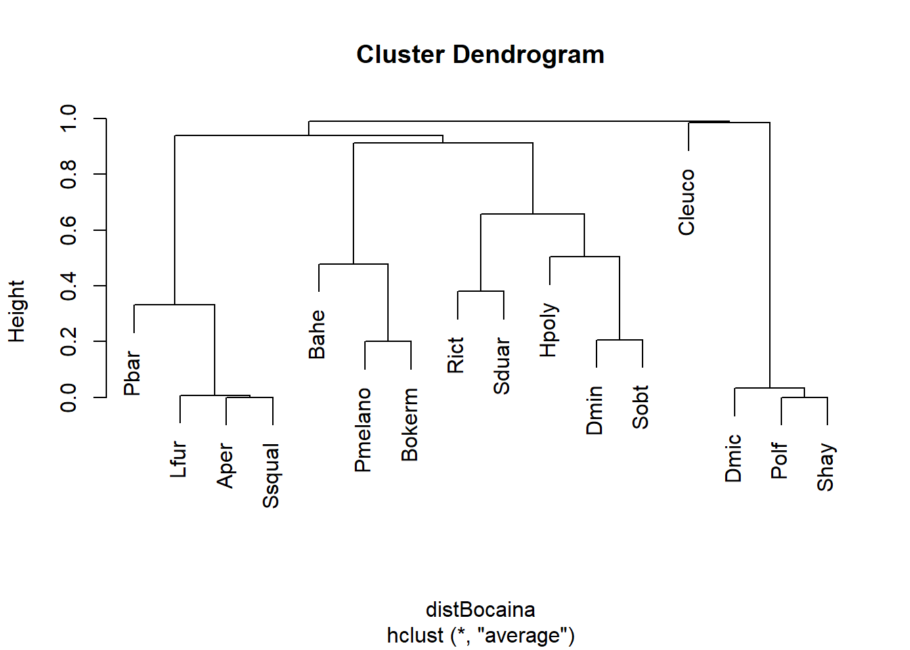
10.2.2 Assessando a qualidade do dendrograma
Precisamos verificar que o agrupamento reduziu a dimensionalidade da matiz de forma eficiente, de maneira a não distorcer a informação. Fazemos isso calculando o Coeficiente de correlação cofenética (CCC)
cofresult <- cophenetic(dendro)
cor(cofresult, distBocaina)
#> [1] 0.9455221Um CCC > .7 indica uma boa representação. Portanto, o nosso resultado de 0.9455221 é alto, garantindo que o dendrograma é adequado.
plot(dendro)
k <- 4
n <- ncol(sp_compos)
MidPoint <- (dendro$height[n - k] + dendro$height[n - k + 1])/2
abline(h = MidPoint, lty = 2)
Nesse caso teremos a formação de cinco grupos, representados pelos nós que estão abaixo da linha de corte. Portanto, o resultado não suporta a nossa hipótese a priori que predizia a formação de apenas dois grupos de espécies.
10.2.2.1 Exemplo 2
No exemplo anterior vimos que é difícil interpretar os grupos baseado num nível de corte. A seguir, vamos utilizar o pacote pvclust que calcula automaticamente o nível de corte de similaridade baseado no Bootstrap de cada nó. Uma desvantagem deste método é que ele somente aceita índices de similaridade da função dist que possui apenas a distância Euclidiana, Manhattan e Canberra. Uma maneira de contornarmos essa limitação é utilizar transformações dos dados disponíveis na função disttransform no pacote BiodiversityR ou o decostand do pacote vegan. Também é possível utilizar a transformação de Box-Cox para dados multivariados, disponível no [material suplementar] (http://www.ecography.org/appendix/ecog-03498) de (Legendre & Borcard, 2018). Esta transformação é geralmente utilizada para tornar a distribuição dos dados mais simétrica (menos enviesada para valores extremos: reduzir o skewness dos dados).
10.2.3 Análise no R
Vamos utilizar o mesmo conjunto de dados acima pra responder à mesma pergunta. Aqui vamos utilizar a distância de Chord (que é indicada para dados de composição de espécies) para calcular a matriz de distância. Se transformarmos uma matriz usando a transformação Chord e depois calcularmos a distância Euclidiana, isso equivale à calcular diretamente a distância de Chord:
# Dados
head(sp_compos)
#> BP4 PP4 PP3 AP1 AP2 PP1 PP2 BP9 PT1 PT2 PT3 BP2 PT5
#> Aper 0 3 0 0 2 0 0 0 0 0 0 181 0
#> Bahe 859 14 14 0 87 312 624 641 0 0 0 14 0
#> Rict 1772 1517 207 573 796 0 0 0 0 0 0 0 0
#> Cleuco 0 0 0 0 0 0 0 0 0 29 369 0 84
#> Dmic 0 0 6 60 4 0 0 0 2758 319 25 0 329
#> Dmin 0 84 344 1045 90 0 0 0 8 0 0 0 0
# Passo 1: transformar para distância de Chord
bocaina_transf <- disttransform(sp_compos, "chord")
# Passo 2: realizar pvclust com método average e distância euclidiana
analise <- pvclust(bocaina_transf, method.hclust = "average", method.dist = "euclidean")
#> Bootstrap (r = 0.5)... Done.
#> Bootstrap (r = 0.56)... Done.
#> Bootstrap (r = 0.69)... Done.
#> Bootstrap (r = 0.75)... Done.
#> Bootstrap (r = 0.88)... Done.
#> Bootstrap (r = 1.0)... Done.
#> Bootstrap (r = 1.06)... Done.
#> Bootstrap (r = 1.19)... Done.
#> Bootstrap (r = 1.25)... Done.
#> Bootstrap (r = 1.38)... Done.
# Passo 3: dendrograma
plot(analise, hang = -1)
pvrect(analise)
É possível notar que existe um único grupo com BS > 95%. Agora vamos tentar usar a distância de Hellinger, que é recomendada (junto com a distância de Chord) para transformar dados de composição de espécies e, desse modo, reduzem distorções nas ordenações como PCA e CA (Legendre & Gallagher, 2001).
# Passo 1: transformar dados com Hellinger
bocaina_transf2 <- disttransform(bocaina, "hellinger")
# Passo 2: realizar pvclust com método average e distância euclidiana
analise2 <- pvclust(bocaina_transf2, method.hclust = "average", method.dist = "euclidean")
#> Bootstrap (r = 0.5)... Done.
#> Bootstrap (r = 0.56)... Done.
#> Bootstrap (r = 0.69)... Done.
#> Bootstrap (r = 0.75)... Done.
#> Bootstrap (r = 0.88)... Done.
#> Bootstrap (r = 1.0)... Done.
#> Bootstrap (r = 1.06)... Done.
#> Bootstrap (r = 1.19)... Done.
#> Bootstrap (r = 1.25)... Done.
#> Bootstrap (r = 1.38)... Done.
# Passo 3: dendrograma
plot(analise2, hang = -1)
pvrect(analise2)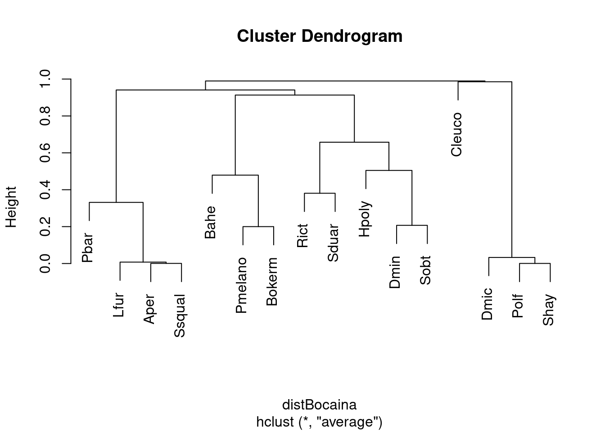
10.2.3.1 Interpretação dos resultados
Notem que se mudarmos o coeficiente de associação, o resultado também muda. Agora temos 1 grupo a mais, composto por Dendropsophus minutus e Scinax duartei que não apareciam antes. Isso se deve ao fato de que a distância de Hellinger dá menos peso para espécies raras do que a Chord.
Neste sentido, os dados não suportam a nossa hipótese inicial da formação de dois grupos, independentemente do coeficiente de associação utilizado.
10.3 K-means e agrupamentos não-hierárquicos
Ao contrário do dendrograma, o K-means é um agrupamento não-hierárquico e, desse modo, não é otimizado para busca grupos menores aninhados em grupos grupos maiores. Resumidamente, podemos calcular o K-means apartir de uma matriz quadrada ou de distância. Essa técnica procura particionar os objetos em k grupos de maneira a minimizar a soma de quadrados entre grupos e maximizá-la dentro dos grupos. Um critério similar ao de uma ANOVA 8. Um diferencial do K-means em relação aos agrupamentos hierárquicos é que o usuário pode escolher antecipadamente o número de grupos que deseja formar.
10.3.0.1 Exemplo 1
Para este exemplo iremos utilizar um conjunto de dados disponível no pacote ade4 que contém dados de 27 espécies de peixes coletados em 30 pontos ao longo do Rio Doubs, na fronteira entre a França e Suiça.
Pergunta
- Qual é o número de grupos que melhor sumariza o padrão de ocorrência de espécies de peixes ao longo de um riacho?
📝 Importante: Neste caso, estamos realizando uma análise exploratória e não temos uma predição.
Variáveis
- Variáveis resposta: composição de espécies de peixes
Checklist
- Vamos normalizar os dados de abundância antes de entrar na análise propriamente, já que existem muitos zeros na matriz.
10.3.1 Análise
# mostrar somente seis primeiras espécies de seis localidades
head(doubs$fish)[, 1:6]
#> Cogo Satr Phph Neba Thth Teso
#> 1 0 3 0 0 0 0
#> 2 0 5 4 3 0 0
#> 3 0 5 5 5 0 0
#> 4 0 4 5 5 0 0
#> 5 0 2 3 2 0 0
#> 6 0 3 4 5 0 0
# retirar a linha 8 (rio sem nenhuma ocorrência de peixe)
spe <- doubs$fish[-8, ]
# Função do pacote vegan para normalizar os dados
spe.norm <- decostand(spe, "normalize")O argumento centers na função abaixo indica o número de grupos que se quer formar. Neste exemplo estamos utilizando centers = 4.
spe.kmeans <- kmeans(spe.norm, centers = 4, nstart = 100)
spe.kmeans
#> K-means clustering with 4 clusters of sizes 3, 12, 6, 8
#>
#> Cluster means:
#> Cogo Satr Phph Neba Thth Teso Chna Chto Lele Lece
#> 1 0.00000000 0.000000000 0.00000000 0.00000000 0.000000000 0.000000000 0.05205792 0.00000000 0.07647191 0.3166705
#> 2 0.10380209 0.542300691 0.50086515 0.43325916 0.114024105 0.075651573 0.00000000 0.00000000 0.06983991 0.1237394
#> 3 0.06167791 0.122088022 0.26993915 0.35942538 0.032664966 0.135403325 0.06212775 0.21568957 0.25887226 0.2722562
#> 4 0.00000000 0.006691097 0.02506109 0.06987391 0.006691097 0.006691097 0.10687104 0.09377516 0.14194394 0.2011411
#> Baba Spbi Gogo Eslu Pefl Rham Legi Scer Cyca Titi
#> 1 0.00000000 0.0000000 0.20500174 0.07647191 0.00000000 0.0000000 0.05205792 0.07647191 0.00000000 0.00000000
#> 2 0.02385019 0.0000000 0.05670453 0.04722294 0.02949244 0.0000000 0.00000000 0.00000000 0.00000000 0.03833408
#> 3 0.15647062 0.1574388 0.16822286 0.12276089 0.17261621 0.0793181 0.06190283 0.04516042 0.06190283 0.14539027
#> 4 0.24327992 0.1326062 0.28386032 0.20630360 0.16920496 0.2214275 0.19066542 0.13171275 0.16019126 0.26230024
#> Abbr Icme Acce Ruru Blbj Alal Anan
#> 1 0.00000000 0.0000000 0.18058775 0.31667052 0.05205792 0.7618709 0.00000000
#> 2 0.00000000 0.0000000 0.00000000 0.01049901 0.00000000 0.0000000 0.00000000
#> 3 0.01473139 0.0000000 0.03192175 0.32201597 0.01473139 0.1095241 0.04739636
#> 4 0.19561641 0.1331835 0.26713081 0.32103755 0.22883055 0.3326939 0.18873077
#>
#> Clustering vector:
#> 1 2 3 4 5 6 7 9 10 11 12 13 14 15 16 17 18 19 20 21 22 23 24 25 26 27 28 29 30
#> 2 2 2 2 3 2 2 3 2 2 2 2 2 2 3 3 3 3 4 4 4 1 1 1 4 4 4 4 4
#>
#> Within cluster sum of squares by cluster:
#> [1] 0.3560423 2.5101386 1.7361453 0.4696535
#> (between_SS / total_SS = 66.7 %)
#>
#> Available components:
#>
#> [1] "cluster" "centers" "totss" "withinss" "tot.withinss" "betweenss" "size"
#> [8] "iter" "ifault"O objeto que fornece o resultado contém: 1) o tamanho (número de objetos) em cada um dos 4 grupos; 2) o centroide de cada grupo e o pertencimento de cada espécie a cada grupo; e 3) o quanto da Soma de Quadrados dos dados é explicada por esta conformação de grupos.
No entanto, não é possível saber a priori qual o número “ideal” de grupos. Para descobrir isso repetimos o k-means com uma série de valores de K. Isso pode ser feito na função cascadeKM.
spe.KM.cascade <- cascadeKM(spe.norm, inf.gr = 2, sup.gr = 10, iter = 100, criterion = "ssi")Tanto calinski quando ssi são bons critérios para encontrar o número ideal de grupos. Quanto maior o valor de ssi, melhor (veja ?cascadeKM mais detalhes).
# Resumo dos resultados
spe.KM.cascade$results
#> 2 groups 3 groups 4 groups 5 groups 6 groups 7 groups 8 groups 9 groups 10 groups
#> SSE 8.2149405 6.4768108 5.0719796 4.3015573 3.58561200 2.9523667 2.4840549 2.05218880 1.75992916
#> ssi 0.1312111 0.1675852 0.1398159 0.1138008 0.08295513 0.1410657 0.1461625 0.07877382 0.06817212SSE: critério utilizado pelo algorítimo para achar o agrupamento ótimo dos objetos.
plot(spe.KM.cascade, sortg = TRUE)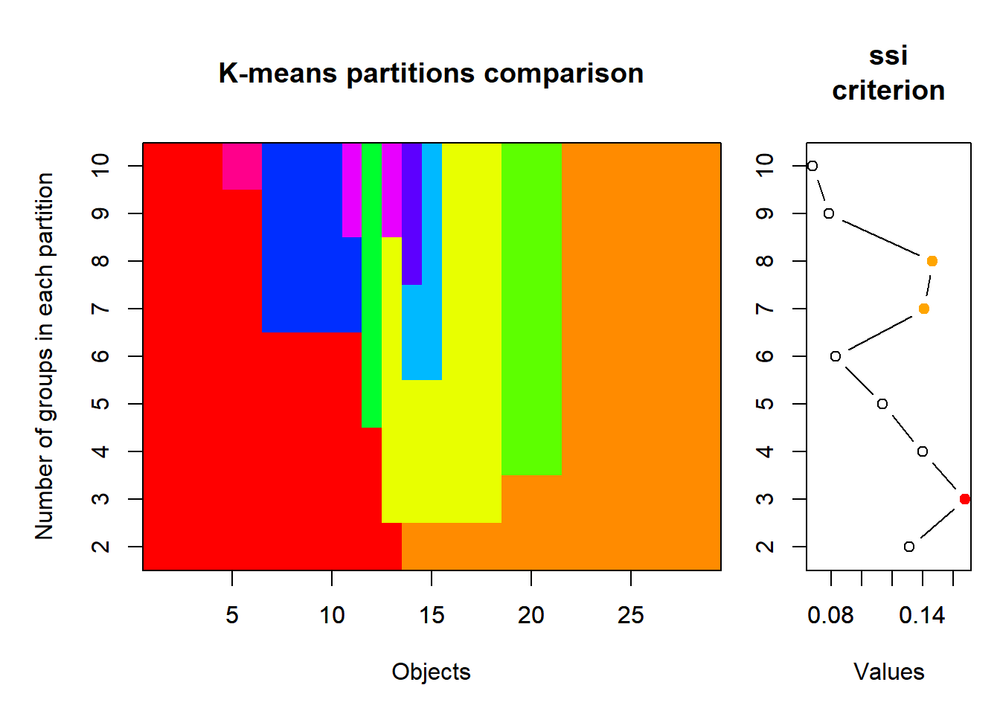
10.3.2 Interpretação dos resultados
Diferentemente da nossa predição inicial, o resultado da análise mostra que o número ideal de grupos para explicar a variância no padrão de ocorrência de espécies é 3. Notem que o SSI máximo é alcançado neste número de grupos 0.1675852 (também indicado pela bola vermelha no plot).
10.4 Espécies indicadoras
Uma pergunta normalmente feita por ecólogos é: qual espécie pode ser indicadora de uma determinada condição ambiental (e.g., poluição)?
O índice IndVal mede dois aspectos das espécies: Especificidade e fidelidade. Uma alta fidelidade significa que espécies ocorrem em todos os locais do grupo e uma alta especificidade significa que as espécies ocorrem somente naquele grupo. Uma boa espécie indicadora é aquela na qual todos os indivíduos ocorrem em todas a amostras referentes a um grupo específico. A Especificidade é dada pela divisão da abundancia média da espécie no grupo pela somatória das abundancias médias dos grupos. Fidelidade é igual ao número de lugares no grupo onde a espécie está presente dividido pelo número total de lugares do grupo (Dufrêne & Legendre, 1997).
Espécies raras podem receber o mesmo valor de IndVal das espécies indicadoras, porém são chamadas de indicadoras assimétricas, uma vez que contribuem com a especificidade do habitat mas não servem para predizer grupos. Ao contrário, as espécies indicadoras são verdadeiros indicadores simétricos e podem ser usadas para predizer grupos.
A análise procede da seguinte forma:
Uma matriz de distância é construída e as unidades amostrais são classificadas com alguma análise de agrupamento, hierárquico ou não;
A variável ambiental para a qual se deseja classificar os grupos é inserida;
As espécies indicadoreas de cada grupo são formadas através do cálculo da especificidade e fidelidade, obtendo-se o valor de IndVal para cada espécie;
Por fim, o conjunto de dados originais é comparado para ver se análise faz sentido.
O cálculo da significância do índice de IndVal é feito por aleatorização de Monte Carlo. Os métodos de Monte Carlo utilizam números aleatórios de dados reais para simular certos padrões esperados na ausência de um processo ecológico específico (Legendre & Legendre, 2012). Assim, o valor do índice é aleatorizado 999 vezes (ou o número de vezes que você optar) dentro dos tratamentos e o valor de P é dado pelo número de vezes em que o índice observado foi igual ou maior que os valores aleatorizados.
10.4.0.1 Exemplo 1
Para este exemplo vamos utilizado o mesmo conjunto de dados utilizado acima com abundância de 16 espécies de girinos coletados em 14 poças com diferentes graus de cobertura de dossel na Serra da Bocaina.
Pergunta
- Podemos utilizar as espécies de girinos como indicadoras da fitofisionomia?
Predições
- Espécies terrestres serão indicadoras de área aberta, enquanto espécies arborícolas serão indicadoras de áreas florestais.
Variáveis
- Variáveis resposta: mesma matriz já utilizada contendo a abundância de girinos ao longo de poças na Serra da Bocaina.
10.4.1 Análise no R
O IndVal está disponível tanto no pacote indicspecies quando no labdsv. Para este exemplo iremos usar o labdsv. Primeiro vamos agrupar as unidades amostrais (poças) que informa os grupos de fitofisionomias onde as poças se localizam e para os quais deseja-se encontrar espécies indicadoras:
## Dados
head(bocaina)
#> BP4 PP4 PP3 AP1 AP2 PP1 PP2 BP9 PT1 PT2 PT3 BP2 PT5
#> Aper 0 3 0 0 2 0 0 0 0 0 0 181 0
#> Bahe 859 14 14 0 87 312 624 641 0 0 0 14 0
#> Rict 1772 1517 207 573 796 0 0 0 0 0 0 0 0
#> Cleuco 0 0 0 0 0 0 0 0 0 29 369 0 84
#> Dmic 0 0 6 60 4 0 0 0 2758 319 25 0 329
#> Dmin 0 84 344 1045 90 0 0 0 8 0 0 0 0
fitofis <- c(rep(1, 4), rep(2, 4), rep(3, 4), rep(4, 4), rep(5, 4))
## Análise de espécies indicadoras
res_indval <- indval(bocaina, fitofis)
# A função summary só exibe o resultado para as espécies indicadoras
summary(res_indval)
#> [1] cluster indicator_value probability
#> <0 rows> (or 0-length row.names)
#>
#> Sum of probabilities = 9.324
#>
#> Sum of Indicator Values = 3.97
#>
#> Sum of Significant Indicator Values = 0
#>
#> Number of Significant Indicators = 0
#>
#> Significant Indicator Distribution
#> < table of extent 0 >Para apresentar uma tabela dos resultados para todas as espécies temos de processar os dados:
res_indval$maxcls # classe de maior valor indicador / espécie
#> BP4 PP4 PP3 AP1 AP2 PP1 PP2 BP9 PT1 PT2 PT3 BP2 PT5
#> 1 1 2 2 2 2 1 1 4 2 1 2 2
res_indval$indcls # valor indicador (indval)
#> BP4 PP4 PP3 AP1 AP2 PP1 PP2 BP9 PT1 PT2 PT3
#> 0.4268332 0.3554217 0.3990627 0.4887564 0.5812265 0.1283151 0.2194093 0.2260226 0.3535255 0.1945122 0.2341371
#> BP2 PT5
#> 0.1648885 0.1991525
res_indval$pval # significância do indval
#> BP4 PP4 PP3 AP1 AP2 PP1 PP2 BP9 PT1 PT2 PT3 BP2 PT5
#> 0.281 0.613 0.282 0.146 0.316 1.000 1.000 1.000 0.742 1.000 1.000 0.944 1.000
tab_indval <- cbind.data.frame(maxcls = res_indval$maxcls, ind.value = res_indval$indcls,
P = res_indval$pval)
tab_indval
#> maxcls ind.value P
#> BP4 1 0.4268332 0.281
#> PP4 1 0.3554217 0.613
#> PP3 2 0.3990627 0.282
#> AP1 2 0.4887564 0.146
#> AP2 2 0.5812265 0.316
#> PP1 2 0.1283151 1.000
#> PP2 1 0.2194093 1.000
#> BP9 1 0.2260226 1.000
#> PT1 4 0.3535255 0.742
#> PT2 2 0.1945122 1.000
#> PT3 1 0.2341371 1.000
#> BP2 2 0.1648885 0.944
#> PT5 2 0.1991525 1.00010.4.2 Interpretação dos resultados
No resultado podemos ver que temos duas espécies indicadoras da fitofisionimia 1: Rhinella icterica (Rict) e Scinax duartei (Sduar). Nenhuma espécie foi indicadora dos outros grupos neste exemplo.
10.5 Análises de Ordenação
Os análises de ordenação representam um conjunto de métodos e técnicas multivariadas que buscam organizar objetos (e.g., localidades, indivíduos, espécies) em alguma ordem. Por exemplo, tais métodos permitem identificar se existem grupo de espécies que ocorrem exclusivamente em um determinado hábitat. Ao buscar esta ordem as técnicas de ordenação possuem três principais utilidades: (1) reduzir a dimensionalidade e revelar padrões, (2) separar variáveis mais e menos importantes em combinações complexas, e (3) separar relações mais e menos fortes ao comparar variáveis preditoras e dependentes. Em geral, os métodos são dividídos em ordenações irrestritas (ou análise de gradiente indireto) e restritas (ou análise de gradiente direto). As ordenações irrestritas organizam os objetos (e.g., espécies) de acordo com sua estrutura de covariância (ou correlação), o que demonstra que a proximidade (ou distância) dentro do espaço multidimensional representa semelhança (ou diferença) dos objetos. Por outro lado, as ordenações restritras posiciona os objetos (e.g., espécies) de acordo com sua relação linear com outras variáveis coletadas nas mesmas unidades amostraits (e.g., temperatura e precipitação). Ao passo que as ordenações irrestritas dependem somente de uma matriz (e.g., espécies por localidades), as ordenações restritas utilizam no mínimo duas matrizes (e.g., espécies por localidades e variáveis climáticas por localidade). Desse modo, fica claro por esta diferença entre os dados utilizados que as análises irrestritas são mais exploratórias, enquanto análises restritas são ideias para testar hipóteses com dados multidimensionais. A tabela a seguir apresenta as principais análises utilizadas em ecologia.
| Método | Tipo de variável | Função R |
|---|---|---|
| Ordenação irrestrita | ||
| PCA | Variáveis contínuas (distância euclidiana) | PCA, rda, dudi.pca |
| PCoA | Aceita qualquer tipo de variável, mas depende da escolha apropriada de uma medida de distância | pcoa, dudi.pco |
| nMDS | Aceita qualquer tipo de variável, mas depende da escolha apropriada de uma medida de distância | metaMDS, nmds |
| CA | dudi.coa | |
| Hill-Smith | Aceita qualquer tipo de variável | dudi.hillsmith |
| Ordenação restrita | ||
| RDA | Variáveis preditoras de qualquer tipo e variáveis dependentes contínuas (ou presença e ausência) | rda |
| RDA parcial | Variáveis preditoras de qualquer tipo e variáveis dependentes contínuas (ou presença e ausência) | rda |
| dbRDA | Variáveis preditoras de qualquer tipo e matriz de distância obtida a partir das variáveis dependentes | capscale, dbrda |
| CCA | Variáveis preditoras de qualquer tipo e variáveis dependentes contínuas (ou presença e ausência) | rda |
| PERMANOVA | Variáveis preditoras de qualquer tipo e matriz de distância obtida a partir das variáveis dependentes | adonis, adonis2 |
| PCR | Variável dependente necessariamente representada por escores da PCA ou PCoA e variáveis preditoras de qualquer tipo | pca, pcoa, lm, glm |
10.5.1 Ordenações irrestritas
10.5.1.1 Análise de Componentes Principais - PCA
A PCA é uma das ordenações mais utilizadas em diversas áreas do conhecimento. Em ecologia, ela se popularizou por facilitar a visualização de dados complexos como de distribuição de espécies em diferentes localidades e de potenciais variáveis explicativas. Ao mesmo tempo que ganhou tamanha popularidade, a PCA tem sido empregada de maneira incorreta, uma vez que muitos estudos utilizam a visualização gráfica da ordenação (o biplot) para intepretar “relações” entre variáveis preditoras (ambientais) e dependentes (espécies). Porém, como informado anteriormente, as ordenações irrestritas utilizam a estrutura de covariância dos objetos para organizar suas relações de similaridade.
Antes de explicar a análise, imagine que vamos usar uma matriz com cinco espécies de aranhas que foram encontradas em oito cidades diferentes. A quantidade de indivíduos de cada espécie coletada em cada cidade será o valor de preenchimento desta matriz. Sendo assim, a matriz possui oito objetos (cidades, representando unidades amostrais) e cinco descritores (espécies), como na tabela abaixo:
| Cidade | sp1 | sp2 | sp3 | sp4 | sp5 |
|---|---|---|---|---|---|
| Cidade 1 | 5 | 0 | 0 | 0 | 0 |
| Cidade 2 | 7 | 6 | 0 | 0 | 0 |
| Cidade 3 | 2 | 3 | 0 | 0 | 0 |
| Cidade 4 | 0 | 4 | 9 | 0 | 0 |
| Cidade 5 | 0 | 0 | 12 | 4 | 0 |
| Cidade 6 | 0 | 0 | 3 | 10 | 6 |
| Cidade 7 | 0 | 0 | 0 | 8 | 9 |
| Cidade 8 | 0 | 0 | 0 | 0 | 12 |
O primeiro passo da PCA é obter uma matriz centralizada onde cada valor é subtraído da média da coluna que aquele valor pertence. Esta centralização pode ser calculada com a função scale.
aranhas <- data.frame(sp1 = c(5, 7, 2, 0, 0, 0, 0, 0), sp2 = c(0, 6, 3, 4, 0, 0,
0, 0), sp3 = c(0, 0, 0, 9, 12, 3, 0, 0), sp4 = c(0, 0, 0, 0, 4, 10, 8, 0), sp5 = c(0,
0, 0, 0, 0, 6, 9, 12), row.names = paste("cidade", 1:8, sep = ""))
aranha.cent <- as.data.frame(base::scale(aranhas, center = TRUE, scale = FALSE))O segundo passo é calcular uma matriz de covariância (ou matriz de dispersão) e, a partir desta matriz, obter os autovalores e autovetores. Os autovalores representam a porcentagem de explicação de cada eixo e podem ser calculados dividindo a soma do autovalor de cada eixo pela soma de todos os autovalores. No exemplo que apresentamos, os dois primeiros eixos representam 47,20% e 35,01%, respectivamente, de toda variação. Os autovetores, por sua vez, representam os valores que multiplicam as variáveis originais e, desse modo, indicam a direção desses valores. Por fim, os componentes principais (Matriz F) são obtidos multiplicando os autovetores com os valores da matriz centralizada.
## Matriz de covaiância
matriz_cov <- cov(aranha.cent)
## Autovalores e autovetores
eigen_aranhas <- eigen(matriz_cov)
autovalores <- eigen_aranhas$values
autovetores <- as.data.frame(eigen_aranhas$vectors)
autovalores # eigenvalue
#> [1] 36.733031 27.243824 9.443805 2.962749 1.438020
colnames(autovetores) <- paste("PC", 1:5, sep = "")
rownames(autovetores) <- colnames(aranhas)
autovetores
#> PC1 PC2 PC3 PC4 PC5
#> sp1 -0.2144766 0.38855265 0.29239380 -0.02330706 0.8467522
#> sp2 -0.2442026 0.17463316 0.01756743 0.94587037 -0.1220204
#> sp3 -0.3558368 -0.80222917 -0.27591770 0.10991178 0.3762942
#> sp4 0.4159852 -0.41786654 0.78820962 0.17374202 0.0297183
#> sp5 0.7711688 0.01860152 -0.46560957 0.25003826 0.3544591
matriz_F <- as.data.frame(as.matrix(aranha.cent) %*% as.matrix(autovetores))
matriz_F
#> PC1 PC2 PC3 PC4 PC5
#> cidade1 -2.979363 4.4720575 1.1533417 -3.2641923 0.5433206
#> cidade2 -4.873532 6.2969618 1.8435339 2.3644158 1.5047024
#> cidade3 -3.068541 3.8302991 0.3288626 -0.3566600 -2.3629973
#> cidade4 -6.086322 -3.9922356 -2.7216169 1.6250305 -0.7918743
#> cidade5 -4.513082 -8.7689219 -0.4668012 -1.1337476 0.9439633
#> cidade6 5.812374 -3.9444494 3.9520584 0.4197281 -0.1376205
#> cidade7 8.361421 -0.6462243 1.8065636 0.4926235 -0.2625625
#> cidade8 7.347046 2.7525126 -5.8959421 -0.1471979 0.5630683
## Porcentagem de explicação de cada eixo
100 * (autovalores/sum(autovalores))
#> [1] 47.201691 35.008126 12.135225 3.807112 1.847846Agora, é possível visualizar a relação entre as cidades e similaridade na espécies de aranhas que vivem em cada uma delas.
matriz_F %>%
ggplot(aes(x = PC1, y = PC2, label = rownames(matriz_F))) + theme_bw() + geom_label() +
geom_hline(yintercept = 0, linetype = 2) + geom_vline(xintercept = 0, linetype = 2) +
theme(axis.title.x = element_text(size = 14), axis.text.x = element_text(vjust = 0.5,
size = 12), axis.title.y = element_text(size = 14), axis.text.y = element_text(vjust = 0.5,
size = 12))
Checklist
Verifique se todas as variáveis utilizadas são contínuas. Caso contrário, considere utilizar PCoA.
Apesar do exemplo acima ter apresentado a ocorrência de espécies de aranhas em diferentes cidades, é fundamental saber que utilizar PCA com esses dados pode ser problemático. Assim, tenha cuidado em usar de composição de espécies (especialmente abundância) com PCA, uma vez que ‘duplos zeros’ podem gerar distorções na ordenação (Legendre & Legendre, 2012). Como alternativa, é possível utilizar PCA com dados padronizados com o método de Hellinger (Legendre & Gallagher, 2001).
10.5.1.2 Exemplo 1
Neste exemplo vamos utilizar um conjunto de dados morfológicos de pinguins do arquipélago Palmer (Península Antártica) disponíveis no pacote ‘palmerpenguins.’ Os dados representam medidas do comprimento e largura do bico (mm), comprimento da nadadeira (mm) e massa corporal (gramas) de três espécies: Adélie, Chinstrap e Gentoo. Como descrito acima, a PCA deve ser utilizada para exploração de dados ou para testes a posteriori (p. ex., PCR). Neste exemplo, iremos usar a estrutura de perguntas e predições para manter a proposta do livro.
Pergunta
- Existe diferenças nas características morfológicas das espécies de pinguins do arquipélago Palmer?
Predições
- Pinguins com dieta diferente possuem differentes características morfológicas.
Variáveis
Preditora: espécie (categórica com três níveis)
Dependentes: variáveis morfológicas (contínua)
10.5.1.3 Análise no R
Antes de começar, é necessário remover dados ausentes (se houver) e editar nomes das variáveis (ponto importante para determinar como devem aparecer no gráfico).
## Verificar se existem NAs nos dados.
sum(is.na(penguins))
#> [1] 19
## Remover dados ausentes (NA), quando houver.
penguins <- na.omit(penguins)
## Editar nomes para aparecer nos gráficos.
names(penguins) <- c("species", "island", "Bill length", "Bill depth", "Flipper length",
"Body mass", "Sex", "Year")
## Manter somentes dados contínuos que pretende aplicar a PCA.
penguins_trait <- penguins[, 3:6]Agora sim os dados estão prontos para fazer a PCA. Um argumento é essencial na análise, o “scale.unit.” Se você utiliar dentro deste argumento o seleção ‘TRUE,’ a função padroniza automaticamente as variáveis para terem a média 0 e variância 1. Esta padronização é essencial quando as variáveis estão em escalas muito diferentes. No exemplo selecionado, temos variáveis como comprimento do bico (em milímetros) e massa corporal (em gramas).
# Compare com este código a variância das variáveis
penguins_trait %>%
dplyr::summarise(across(where(is.numeric), ~var(.x, na.rm = TRUE)))
#> # A tibble: 1 × 4
#> `Bill length` `Bill depth` `Flipper length` `Body mass`
#> <dbl> <dbl> <dbl> <dbl>
#> 1 29.9 3.88 196. 648372.
# Agora, veja o mesmo cálculo se fizer a padronização (scale.unit da função
# PCA)
penguins_pad <- decostand(penguins_trait, "standardize")
penguins_pad %>%
dplyr::summarise(across(where(is.numeric), ~var(.x, na.rm = TRUE)))
#> Bill length Bill depth Flipper length Body mass
#> 1 1 1 1 1
# PCA
pca.p <- PCA(penguins_trait, scale.unit = TRUE, graph = FALSE)Apesar da simplicidade do comando para executar a PCA, o objeto resultante da análise possui diversas informações que são essenciais para sua plena interpretação. Dentre elas, se destacam os autovalores, escores e loadings. Os autovalores representam a porcentagem de explicação de cada eixo. O escores representam as coordenadas (posições no espaço multidimensional) representando os objetos (geralmente localidades ou indivíduos) e descritores (geralmente espécies ou variáveis ambientais e espaciais). Os loadings, por sua vez, representam a combinação linear entre os escores (nova posição do valor do descritor no espaço ordenado) e os valores originais dos descritores.
## Autovalores: porcentagem de explicação para usar no gráfico
pca.p$eig
#> eigenvalue percentage of variance cumulative percentage of variance
#> comp 1 2.7453557 68.633893 68.63389
#> comp 2 0.7781172 19.452929 88.08682
#> comp 3 0.3686425 9.216063 97.30289
#> comp 4 0.1078846 2.697115 100.00000
## Visualização da porcentagem de explicação de cada eixo nota: é necessário
## ficar atento ao valor máximo do eixo 1 da análise para determinar o valor do
## ylim (neste caso, colocamos que o eixo varia de 0 a 70)
fviz_screeplot(pca.p, addlabels = TRUE, ylim = c(0, 70))
## Outros valores importantes
var_env <- get_pca_var(pca.p)
# Escores (posição) das variáveis em cada eixo
var_env$coord
#> Dim.1 Dim.2 Dim.3 Dim.4
#> Bill length 0.7518288 0.52943763 -0.3900969 -0.04768208
#> Bill depth -0.6611860 0.70230869 0.2585287 0.05252186
#> Flipper length 0.9557480 0.00510580 0.1433474 0.25684871
#> Body mass 0.9107624 0.06744932 0.3592789 -0.19204478
# Contribuição (%) das variáveis para cada eixo
var_env$contrib
#> Dim.1 Dim.2 Dim.3 Dim.4
#> Bill length 20.58919 36.023392267 41.279994 2.107420
#> Bill depth 15.92387 63.388588337 18.130600 2.556942
#> Flipper length 33.27271 0.003350291 5.574092 61.149849
#> Body mass 30.21423 0.584669105 35.015313 34.185789
# loadings - correlação das variáveis com os eixos
var_env$cor
#> Dim.1 Dim.2 Dim.3 Dim.4
#> Bill length 0.7518288 0.52943763 -0.3900969 -0.04768208
#> Bill depth -0.6611860 0.70230869 0.2585287 0.05252186
#> Flipper length 0.9557480 0.00510580 0.1433474 0.25684871
#> Body mass 0.9107624 0.06744932 0.3592789 -0.19204478
# Qualidade da representação da variável. Esse valor é obtido multiplicado
# var_env$coord por var_env$coord
var_env$cos2
#> Dim.1 Dim.2 Dim.3 Dim.4
#> Bill length 0.5652466 2.803042e-01 0.15217561 0.002273581
#> Bill depth 0.4371669 4.932375e-01 0.06683710 0.002758546
#> Flipper length 0.9134542 2.606919e-05 0.02054847 0.065971260
#> Body mass 0.8294881 4.549411e-03 0.12908133 0.036881196
# Escores (posição) das localidades ('site scores') em cada eixo
ind_env <- get_pca_ind(pca.p)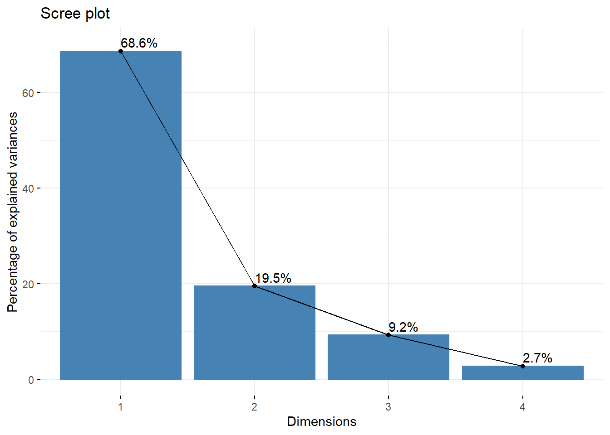
O pacote FactoMineR criou uma função (dimdesc) que seleciona as melhores variáveis (aquelas mais explicativas) para cada eixo através de uma análise fatorial. No exemplo com pinguins, o primeiro eixo (objeto pca.p$eig) explica ~69% da variação morfológica. A função dimdesc mostra que as quatro variáveis morfológicas estão fortemente associadas com o eixo 1. Porém, enquanto comprimento da nadadeira, massa corporal e comprimento do bico estão positivamente associados com o eixo 1 (correlação positiva), a largura do bico tem relação negativa. O eixo 2, por sua vez, explica ~20% da variação, sendo relacionado somente com largura e comprimento do bico.
# Variáveis mais importantes para o Eixo 1
dimdesc(pca.p)$Dim.1
#> $quanti
#> correlation p.value
#> Flipper length 0.9557480 5.962756e-178
#> Body mass 0.9107624 3.447018e-129
#> Bill length 0.7518288 7.830597e-62
#> Bill depth -0.6611860 3.217695e-43
#>
#> attr(,"class")
#> [1] "condes" "list"
# Variáveis mais importantes para o Eixo 2
dimdesc(pca.p)$Dim.2
#> $quanti
#> correlation p.value
#> Bill depth 0.7023087 8.689230e-51
#> Bill length 0.5294376 1.873918e-25
#>
#> attr(,"class")
#> [1] "condes" "list"Agora podemos utilizar o famoso “biplot” para representar a comparação morfológica dos pinguins dentro e entre espécies
fviz_pca_biplot(pca.p, geom.ind = "point", fill.ind = penguins$species, col.ind = "black",
alpha.ind = 0.7, pointshape = 21, pointsize = 4, palette = c("darkorange", "darkorchid",
"cyan4"), addEllipses = FALSE, alpha.var = 1, col.var = "black", gradient.cols = "RdBu",
invisible = "quali", title = NULL) + theme_bw() + xlab("PC 1 (68.63%)") + ylab("PC 2 (19.45%)") +
theme(axis.title.x = element_text(size = 14), axis.text.x = element_text(vjust = 0.5,
size = 12), axis.title.y = element_text(size = 14), axis.text.y = element_text(vjust = 0.5,
size = 12), legend.position = "top", legend.title = element_blank()) + tema_livro()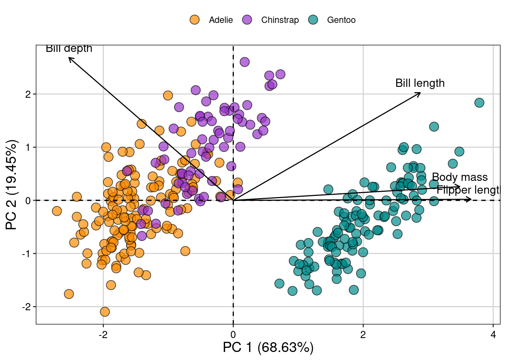
10.5.2 Análise de Coordenadas Principais - PCoA
Diferentemente da PCA, a PCoA é uma análise de ordenação irrestrita que aceita dados de diferentes tipos, como contínuos, categóricos, ordinais, binários, entre outros. Assim, a PCoA é aplicada para casos em que a distância euclidiana não é aplicada (como na PCA). Desse modo, o primeiro passo da análise é calcular uma matriz de similaridade ou de distância (discutido acima). Depois, os passos para obter autovalores e autovetores são bastante parecidos com a PCA. Da mesma forma, os eixos da PCoA e os valores ou posições dos objetos nesses eixos representam a relação de semelhança (ou diferença) baseada nos descritores desses objetos. A diferença, neste caso, é que a PCoA representa um espaço não-euclidiano, que irá ser afetado pela escolha do método de similaridade.
As utilizações mais comuns da PCoA são a ordenação (1) da matriz de composição de espécies usando a distância apropriada (Jaccard, Sorensen, Bray Curits), (2) da matriz de variáveis ambientais com mistos (contínuos, categóricos, circulares, etc…), e (3) da matriz filogenética (método PVR Diniz-Filho et al., 1998). Abaixo, exemplificamos a ordenação da matriz de composição de espécies.
Checklist
Compare as dimensões das matrizes utilizadas para a PCoA. Com bastante frequência, a tentativa de combinar dados categóricos (algum descritor dos objetos) com os valores obtidos com a PCoA gera erros para plotar a figura ou para executar a análise. Verifique, então, se as linhas são as mesmas (nome das localidades ou indivíduos e quantidade).
É fundamental conhecer o tipo de dados que está usando para selecionar a medida de distância apropriada. Essa escolha vai afetar a qualidade da ordenação e sua habilidade para interpretar a relação de semelhança entre os objetos comparados.
Diferente da PCA, a PCoA aceita dados ausentes se a medida de distância escolhida também não tiver esta limitação. Por exemplo, a distância de Gower produz matrizes de similaridade mesmo com dados ausentes em determinados objetos.
Em alguns casos, a autovalores negativos são produzidos na ordenação com PCoA. Veja as principais causas desses valores em Legendre & Legendre (2012). Apesar deste problema, os autovalores mais importantes (eixos iniciais) não são afetados e, deste modo, a qualidade da representação dos objetos no espaço multidimensional não é afetada. Alguns autores sugerem utilizar correções métodos de correção, como Lingoes ou Cailliez (Legendre & Legendre, 2012).
10.5.2.1 Exemplo 1
Neste exemplo vamos utilizar a composição de ácaros Oribatidae em 70 manchas de musgo coletados por Borcard et al. (1992).
Pergunta
- A composição de espécies de ácaros muda entre diferentes topografias?
Predições
- Iremos encontrar ao menos dois grupos de espécies: aquelas que ocorrem em poças dentro de floresta vs. aquelas que ocorrem em poças de áreas abertas.
Variáveis
Preditora: topografia (categórica com dois níveis)
Dependentes: composição de espécies de ácaro
10.5.2.2 Análise no R
# Padronização dos dados com Hellinger
mite.hel <- decostand(mite, "hellinger")
# Cálculo da matriz de distância com método Bray Curtos
sps.dis <- vegdist(mite.hel, "bray")
# PCoA
pcoa.sps <- pcoa(sps.dis, correction = "cailliez")Assim como na PCA, a porcentagem de explicação dos eixos é uma das informações mais importantes pois descrevem a efetividade da redução da dimensionalidade dos dados.
## Porcentagem de explicação do Eixo 1
100 * (pcoa.sps$values[, 1]/pcoa.sps$trace)[1]
#> [1] 49.10564
## Porcentagem de explicação dos Eixo 2
100 * (pcoa.sps$values[, 1]/pcoa.sps$trace)[2]
#> [1] 14.30308
## Porcentagem de explicação acumulada dos dois primeiros eixos
sum(100 * (pcoa.sps$values[, 1]/pcoa.sps$trace)[1:2])
#> [1] 63.40872
# Selecionar os dois primeiros eixos
eixos <- pcoa.sps$vectors[, 1:2]
## Juntar com algum dado categórico de interesse para fazer a figura
pcoa.dat <- data.frame(topografia = mite.env$Topo, eixos)Para visualizar os resultados da PCoA, vamos exportar os escores dos eixos para usar no ggplot2.
## Escores dos dois primeiros eixos
eixos <- pcoa.sps$vectors[, 1:2]
## Combinar dados dos escores com um dado categórico de interesse para nossa
## pergunta
pcoa.dat <- data.frame(topografia = mite.env$Topo, eixos)
### Gráfico biplot da PCoA
pcoa.dat %>%
ggplot(aes(x = Axis.1, y = Axis.2, fill = topografia, color = topografia, shape = topografia)) +
theme_bw() + geom_point(size = 4, alpha = 0.7) + scale_shape_manual(values = c(21,
22)) + scale_color_manual(values = c("black", "black")) + scale_fill_manual(values = c("darkorange",
"cyan4")) + xlab("PCO 1 (49.11%)") + ylab("PCO 2 (14.30%)") + theme(legend.position = "top",
legend.title = element_blank()) + geom_hline(yintercept = 0, linetype = 2) +
geom_vline(xintercept = 0, linetype = 2) + tema_livro()
10.5.2.3 Limitações importantes das ordenações irrestritas
Com frequência, pesquisadores utilizam análises como PCA e PCoA para “testar” diferenças na composição de espécies entre determinados fatores relevantes (altitude, clima, etc…). Porém, como falado acima, as análises de ordenação irrestritas não são utilizadas para testar qualquer hipótese. Ao invés disso, essas análises representam uma poderosa ferramente para explorar padrões em variáveis dependentes ou independentes para ajudar na interpretação ou mesmo para testar hipóteses em análises combinadas com as ordenações irrestritas.
10.6 PCR - Regressão de Componentes Principais
Uma maneira de testar hipóteses utilizando ordenações irrestritas é utilizando os resultados da ordenação (escores) como variáveis preditoras ou dependentes como, por exemplo, em modelos lineares (e.g., regressão múltipla). O primeiro passo é utilizar uma ordenação, como a PCA, para gerar os “novos” dados que serão usados na análise. A utilização desses novos dados (que representam as coordenadas principais ou escores da PCA) vai depender da pergunta em questão. Por exemplo, pode ser que esses valores representem gradientes climáticos e, por este motivo, serão utilizados como variáveis preditoras em um modelo linear (e.g., regressão múltipla). Por outro lado, esses valores podem representar o espaço morfológicos de espécies de peixe e, como consequência, serão utilizados como variáveis dependentes para entender o efeito da presença de predador sobre a morfologia.
Checklist
Compare as dimensões das matrizes utilizadas para a PCR. Com bastante frequência, a tentativa de combinar dados categóricos (algum descritor dos objetos) com os valores obtidos com a PCoA gera erros para plotar a figura ou para executar a análise. Verifique, então, se as linhas são as mesmas (nome das localidades ou indivíduos e quantidade).
Estudos recentes têm criticado a utilização de PCR para testar hipóteses ecológicas pelo fato dos escores não representarem, necessariamente, a variação total das variáveis originais, bem como a relação entre a variável preditora e a dependente.
10.6.0.1 Exemplo 1
Neste exemplo vamos utilizar a composição de espécies de aves em 23 regiões dos alpes franceses. Os dados ambientais (env) representam variáveis climáticas (temperatura e chuva) e altitude.
Pergunta
- Gradientes climáticos afetam a riqueza de aves?
Predições
- O aumento da umidade e redução da temperatura aumentam o número de espécies de aves.
Variáveis
Preditora: temperatura e chuva (contínuas) e altitude (categórica com três níveis)
Dependentes: riqueza de espécies de aves
# Dados
env_cont <- env[, -8]
env.pca <- PCA(env_cont, scale.unit = TRUE, graph = FALSE)
var_env <- get_pca_var(env.pca)
# Contribuição (%) das variáveis para cada eixo
var_env$contrib
#> Dim.1 Dim.2 Dim.3 Dim.4 Dim.5
#> mini.jan 10.93489 22.2975487 16.1607726 7.6025527 0.01782438
#> maxi.jan 20.18065 3.2890767 2.1814486 4.2756350 41.05646526
#> mini.jul 11.87396 21.1379132 0.3428843 0.7750666 44.70209396
#> maxi.jul 18.47244 0.9159957 56.5369988 9.4368661 2.59283074
#> rain.jan 9.95206 21.5387403 6.5737927 53.7375738 4.44283706
#> rain.jul 16.14997 11.2368132 7.2608047 19.6972097 0.71454880
#> rain.tot 12.43603 19.5839121 10.9432983 4.4750959 6.47339980
# Loadings - correlação das variáveis com os eixos
var_env$cor
#> Dim.1 Dim.2 Dim.3 Dim.4 Dim.5
#> mini.jan 0.6830371 0.6766524 -0.21924927 0.12298817 -0.004517369
#> maxi.jan 0.9279073 0.2598807 -0.08055260 0.09223249 0.216804944
#> mini.jul 0.7117620 0.6588220 0.03193603 -0.03926930 -0.226225907
#> maxi.jul 0.8877675 0.1371462 0.41008461 -0.13702428 0.054483561
#> rain.jan -0.6516187 0.6650391 -0.13983474 -0.32698110 0.071319550
#> rain.jul -0.8300858 0.4803509 0.14696011 0.19796389 -0.028601865
#> rain.tot -0.7284135 0.6341424 0.18041856 0.09435932 0.086088397
ind_env <- get_pca_ind(env.pca)
env.pca$eig
#> eigenvalue percentage of variance cumulative percentage of variance
#> comp 1 4.26652359 60.9503370 60.95034
#> comp 2 2.05340251 29.3343216 90.28466
#> comp 3 0.29745014 4.2492878 94.53395
#> comp 4 0.19896067 2.8422953 97.37624
#> comp 5 0.11448717 1.6355310 99.01177
#> comp 6 0.04312874 0.6161248 99.62790
#> comp 7 0.02604718 0.3721025 100.00000O objeto env.pca$eig demonstra que os três primeiros eixos explicam 94.54% da variação total dos dados climáticos. Como o intuito da PCR é reduzir a dimensionalidade (ou seja, o número de variáveis preditoras ou depedentes) para facilitar a interpretação e garantir que as variáveis não sejam correlacionadas. O próximo passo então é obter os valores dos escores que representam os valores convertidos para serem usados em uma determinada análise, como a regressão múltipla.
# Passo 1: obter os primeiros eixos
pred.env <- ind_env$coord[, 1:3]
# Passo 2: calcular a riqueza de espécies
riqueza <- specnumber(species)
# Passo 3: combinar os dois valores em um único data.frame
dat <- data.frame(pred.env, riqueza)Agora que os dados foram combinados em uma única matriz, podemos utilizar os comandos aprendidos no Capítulo 8 para testar nossa hipótese.
# Regressão múltipla
mod1 <- lm(riqueza ~ Dim.1 + Dim.2 + Dim.3, data = dat)
par(mfrow = c(2, 2))
plot(mod1) # verificar pressupostos dos modelos lineares
summary(mod1) # resultados do teste
#>
#> Call:
#> lm(formula = riqueza ~ Dim.1 + Dim.2 + Dim.3, data = dat)
#>
#> Residuals:
#> Min 1Q Median 3Q Max
#> -3.4008 -1.1729 0.4356 1.2072 2.4571
#>
#> Coefficients:
#> Estimate Std. Error t value Pr(>|t|)
#> (Intercept) 13.30435 0.37639 35.347 < 2e-16 ***
#> Dim.1 0.68591 0.18222 3.764 0.00131 **
#> Dim.2 -0.09961 0.26267 -0.379 0.70874
#> Dim.3 -0.21708 0.69014 -0.315 0.75654
#> ---
#> Signif. codes: 0 '***' 0.001 '**' 0.01 '*' 0.05 '.' 0.1 ' ' 1
#>
#> Residual standard error: 1.805 on 19 degrees of freedom
#> Multiple R-squared: 0.4313, Adjusted R-squared: 0.3415
#> F-statistic: 4.804 on 3 and 19 DF, p-value: 0.01179
dimdesc(env.pca)$Dim.1
#> $quanti
#> correlation p.value
#> maxi.jan 0.9279073 1.846790e-10
#> maxi.jul 0.8877675 1.607390e-08
#> mini.jul 0.7117620 1.396338e-04
#> mini.jan 0.6830371 3.282701e-04
#> rain.jan -0.6516187 7.559358e-04
#> rain.tot -0.7284135 8.112903e-05
#> rain.jul -0.8300858 9.588034e-07
#>
#> attr(,"class")
#> [1] "condes" "list"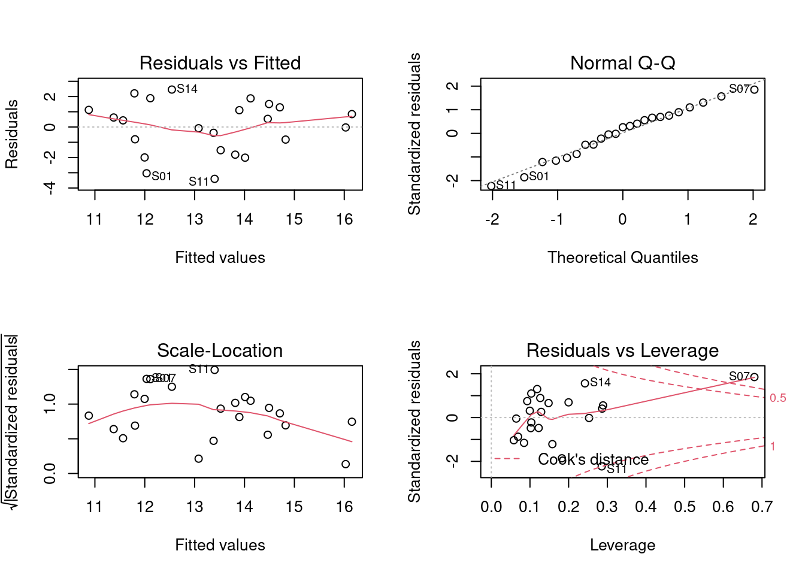
Como percebemos, a Dim.1 foi o único gradiente ambiental que afetou a riqueza de espécies. Para interpretar esta dimensão (e outras importantes), podemos usar a função dimdesc para verificar as variáveis mais importantes. Neste caso, os valores mais extremos de correlação (maior que 0.8) indicam que a temperatura do mês de janeiro e julho bem como a chuva do mês de julho foram as variáveis mais importantes para determinar o gradiente ambiental expresso na dimensão 1. Assim, podemos fazer um gráfico para representar a relação entre Eixo 1 (gradiente chuva-temperatura) e a riqueza de espécies de aves. Valores negativos do eixo 1 (Gradiente ambiental - PC1) representam localidades com mais chuva, ao passo que valores positivos indicam localidades com temperaturas maiores.
dat %>%
ggplot(aes(x = Dim.1, y = riqueza)) + theme_bw() + geom_smooth(method = lm, fill = "#525252",
color = "black") + geom_point(size = 4, shape = 21, alpha = 0.7, color = "#1a1a1a",
fill = "cyan4") + xlab("Gradiente ambiental (PC1)") + ylab("Riqueza de aves") +
theme(axis.title.x = element_text(size = 14), axis.text.x = element_text(vjust = 0.5,
size = 12), axis.title.y = element_text(size = 14), axis.text.y = element_text(vjust = 0.5,
size = 12)) + tema_livro()
10.6.0.2 Exemplo 2
É possível que os dados utilizados em seu estudo sejam mistos, ou seja, incluem tanto variáveis categóricas quanto contínuas. Como falado acima, nesses casos a análise indicada é a PCoA. Assim como na PCA, podemos extrair os escores da PCoA para utilizar a posteriori em análises univariadas e multivariadas.
Pergunta:
- Variáveis climáticas, vegetacionais e topográficas afetam a riqueza de ácaros?
Predições
- A densidade da vegetação e disponibilidade de água aumentam a riqueza de espécies de ácaros.
Variáveis
Preditoras: densidade de substrado e disponibilidade de água (contínuas), tipo de substrado (categórica com 7 níveis), densidade arbusto (ordinal com 3 níveis), e topografia (categórica com 2 níveis)
Dependentes: riqueza de espécies de ácaros
O primeiro passo então é utilizar um método de distância apropriado para o seu conjunto de dados. Em nosso exemplo, utilizaremos a distância de Gower, que é usada para dados mistos (veja Capítulo 15).
## Matriz de distância
env.dist <- gowdis(mite.env)
## PCoA
env.mite.pco <- pcoa(env.dist, correction = "cailliez")
## Porcentagem de explicação do Eixo 1
100 * (env.mite.pco$values[, 1]/env.mite.pco$trace)[1]
#> [1] 61.49635
## Porcentagem de explicação dos Eixo 2
100 * (env.mite.pco$values[, 1]/env.mite.pco$trace)[2]
#> [1] 32.15486O próximo passo é exportar os escores para as análises a posteriori.
## Selecionar os dois primeiros eixos
pred.scores.mite <- env.mite.pco$vectors[, 1:2]
## Juntar com os dados da área para fazer a figura
mite.riqueza <- specnumber(mite)
pred.vars <- data.frame(riqueza = mite.riqueza, pred.scores.mite)
### Regressão múltipla
mod.mite <- lm(riqueza ~ Axis.1 + Axis.2, data = pred.vars)
par(mfrow = c(2, 2))
plot(mod.mite)
summary(mod.mite)
#>
#> Call:
#> lm(formula = riqueza ~ Axis.1 + Axis.2, data = pred.vars)
#>
#> Residuals:
#> Min 1Q Median 3Q Max
#> -10.6874 -2.3960 -0.1378 2.5032 8.6873
#>
#> Coefficients:
#> Estimate Std. Error t value Pr(>|t|)
#> (Intercept) 15.1143 0.4523 33.415 < 2e-16 ***
#> Axis.1 -11.4303 2.0013 -5.711 2.8e-07 ***
#> Axis.2 5.6832 2.7677 2.053 0.0439 *
#> ---
#> Signif. codes: 0 '***' 0.001 '**' 0.01 '*' 0.05 '.' 0.1 ' ' 1
#>
#> Residual standard error: 3.784 on 67 degrees of freedom
#> Multiple R-squared: 0.3548, Adjusted R-squared: 0.3355
#> F-statistic: 18.42 on 2 and 67 DF, p-value: 4.225e-07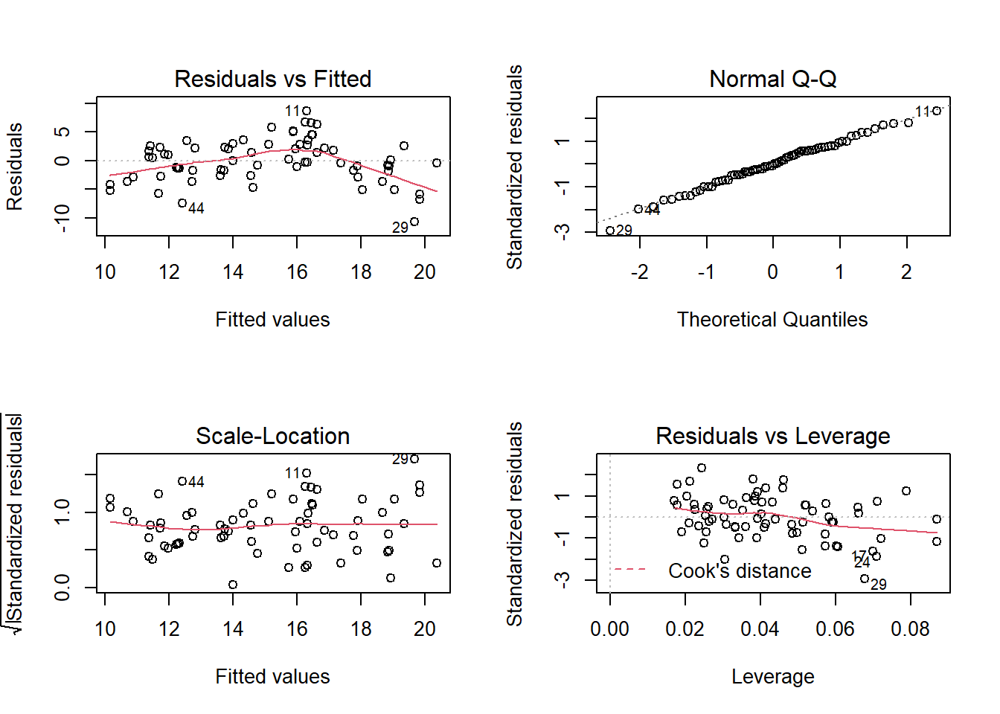
Finalmente, após interpretar os resultados do modelo, podemos fazer a figura com as variáveis (eixos) importantes
g_acari_axi1 <- pred.vars %>%
ggplot(aes(x = Axis.1, y = riqueza)) + theme_bw() + geom_smooth(method = lm,
fill = "#525252", color = "black") + geom_point(size = 4, shape = 21, alpha = 0.7,
color = "#1a1a1a", fill = "cyan4") + xlab("Gradiente ambiental (PC1)") + ylab("Riqueza de ácaros") +
theme(axis.title.x = element_text(size = 14), axis.text.x = element_text(vjust = 0.5,
size = 12), axis.title.y = element_text(size = 14), axis.text.y = element_text(vjust = 0.5,
size = 12)) + tema_livro()
g_acari_axi2 <- pred.vars %>%
ggplot(aes(x = Axis.2, y = riqueza)) + theme_bw() + geom_smooth(method = lm,
fill = "#525252", color = "black") + geom_point(size = 4, shape = 21, alpha = 0.7,
color = "#1a1a1a", fill = "darkorange") + xlab("Gradiente ambiental (PC2)") +
ylab("Riqueza de ácaros") + theme(axis.title.x = element_text(size = 14), axis.text.x = element_text(vjust = 0.5,
size = 12), axis.title.y = element_text(size = 14), axis.text.y = element_text(vjust = 0.5,
size = 12)) + tema_livro()
## Função para combinar os dois plots em uma única janela
grid.arrange(g_acari_axi1, g_acari_axi2, nrow = 1)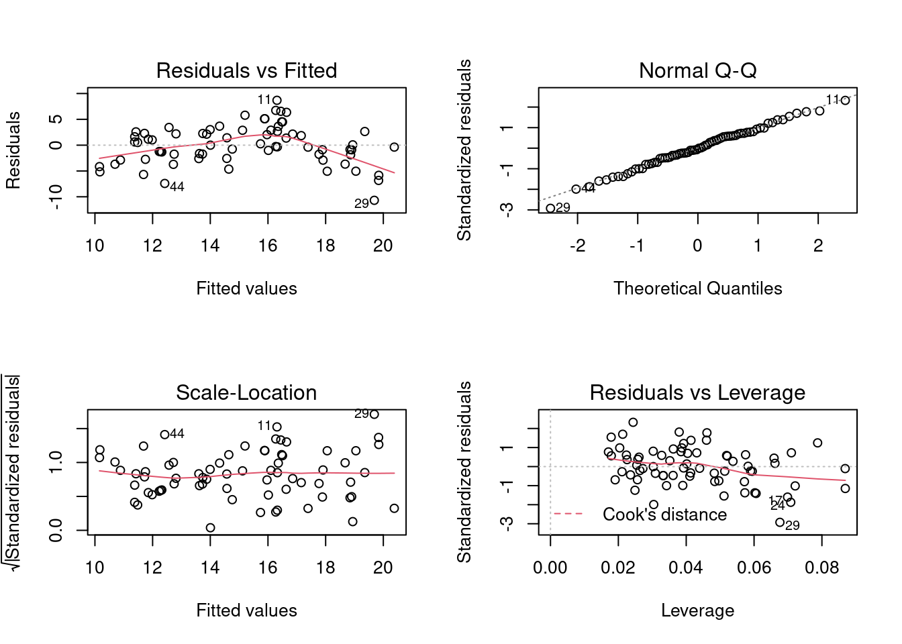
10.7 Ordenação restrita
A ordenação restrita, ou análise de gradiente direto organiza os objetos de acordo com suas relações com outras variáveis (preditoras) coletadas nas mesmas unidades amostrais. O exemplo mais comum na ecologia é de investigar a relação entre diversas variáveis ambientais (matriz X) coletadas em n localidades e a abundância (ou presença ausência) de y espécies coletadas nas mesmas localidades (matrix Y). Com frequência, outras dados são utilizados como as coordenadas geográficas das unidades amostrais (matriz W), os atributos funcionais das espécies coletadas (matriz T) e a relação filogenética dessas espécies (matriz P). Diversos métodos são utilizados para combinar duas ou mais matrizes, mas neste capítulo iremos apresentar a RDA, RDAp e métodos espaciais para incluir a matriz W nas análises de gradiente direto.
10.7.1 RDA: Análise de Redundância
A RDA é uma análise semelhante a regressão múltipla (Capítulo 8) mas que usa dados multivariados como variável dependente. As duas matrizes comuns, matriz X (n unidades amostraits e m variáveis) e matriz Y (n unidades amostrais e p descritores - geralmente, espécies). O primeiro passo da RDA é centralizar (assim como na PCA, exemplo acima) as matrizes X e Y. Após a centralização, realiza-se regressões lineares entre X e Y para obter os valores preditos de Y (ou seja, os valores de Y que representação uma combinação linear com X). O passo seguinte é realizar uma PCA dos valores preditos de Y. Este último procedimento gera os autovalores, autovetores e os eixos canônicos que correspondem às coordenadas dos objetos (unidades amostrais), variáveis preditoras e das variáveis resposta. A diferença da ordenação do valor de Y predito e da ordenação somente de Y (como na PCA implementada acima) é que a segunda mostra a posição prevista pela relação linear entre X e Y. Logo, essa é exatamente o motivo da ordenação ser conhecida como restrita, pois a variação em Y é restrita (linearmente) pela variação de X. Assim como na regressão múltipla, a estatística da RDA é representada pelo valor de R2 e F. O valor de R2 indica a força da relação linear entre X e Y e o valor do F representa o teste global de significância. Além disso, é possível testar a significância de cada um dos eixos da ordenação (e a presença de pelo menos um eixo significativo é pré-requisito para que exista a relação linear entre X e Y) e de cada uma das variáveis preditoras da matriz X.
Checklist
Variáveis preditoras: importante verificar (1) a estrutura de correlação das variáveis ambientais, e a (2) presença de autocorrelação espacial.
Composição de espécies como matriz Y: fundamental observar se os valores utilizados representam abundância ou presença-ausência e qual a necessidade de padronização (e.g., Hellinger).
Assim como em modelos de regressão linear e múltipla, os valores de R2 ajustado devem ser selecionados ao invés do valor de R2.
10.7.1.1 Exemplo 1
Espécies de aves que ocorrem em localidades com diferentes altitudes.
Pergunta:
- O clima e a altitude modificam a composição de espécies de aves?
Predições
- Diferenças climáticas (temperatura e chuva) e altitudinais alteram a composição de espécies de aves.
Variáveis (mesmo conjunto de dados usados na PERMANOVA)
Preditoras: Temperatura e chuva (contínuas) e altitude (categórica com três níveis)
Dependente: composição de espécies de aves
## Passo 1: transformação de hellinger da matriz de espécies caso tenha dados
## de abundância.
species.hel <- decostand(species, "hellinger")
## Passo 2: selecionar variáveis importantes. Para isso, é necessário remover
## a variável categórica.
env.contin <- env[, -8]
## Evite usar variáveis muito correlacionadas
sel.vars <- forward.sel(species.hel, env.contin)
#> Testing variable 1
#> Testing variable 2
#> Testing variable 3
#> Procedure stopped (alpha criteria): pvalue for variable 3 is 0.219000 (> 0.050000)
sel.vars$variables
#> [1] "rain.jul" "maxi.jul"
env.sel <- env[, sel.vars$variables]
## Passo 3: padronizar matriz ambiental (somente variáveis contínuas)
env.pad <- decostand(env.sel, "standardize")
## Matriz final com variáveis preditoras
env.pad.cat <- data.frame(env.pad, altitude = env$altitude)Depois de selecionar um subconjunto dos dados com o método Forward Selection e padronizá-los (média 0 e desvio padrão 1), o modelo da RDA é construído como modelos lineares e PERMANOVA.
## RDA com dados selecionados e padronizados
rda.bird <- rda(species.hel ~ rain.jul + maxi.jul + altitude, data = env.pad.cat)
# Para interpretar, é necessário saber a significância dos eixos para
# representar a relação entre as variáveis preditoras e a composição de
# espécies
res.axis <- anova.cca(rda.bird, by = "axis")
res.axis
#> Permutation test for rda under reduced model
#> Forward tests for axes
#> Permutation: free
#> Number of permutations: 999
#>
#> Model: rda(formula = species.hel ~ rain.jul + maxi.jul + altitude, data = env.pad.cat)
#> Df Variance F Pr(>F)
#> RDA1 1 0.045759 12.0225 0.001 ***
#> RDA2 1 0.009992 2.6252 0.062 .
#> RDA3 1 0.007518 1.9752 0.133
#> RDA4 1 0.003582 0.9410 0.471
#> Residual 18 0.068510
#> ---
#> Signif. codes: 0 '***' 0.001 '**' 0.01 '*' 0.05 '.' 0.1 ' ' 1
# Em seguida, é possível identificar quais são as variáveis que contribuem ou
# que mais contribuem para a variação na composição de espécies
res.var <- anova.cca(rda.bird, by = "term") ## Qual variável?
res.var
#> Permutation test for rda under reduced model
#> Terms added sequentially (first to last)
#> Permutation: free
#> Number of permutations: 999
#>
#> Model: rda(formula = species.hel ~ rain.jul + maxi.jul + altitude, data = env.pad.cat)
#> Df Variance F Pr(>F)
#> rain.jul 1 0.036514 9.5936 0.001 ***
#> maxi.jul 1 0.011264 2.9596 0.016 *
#> altitude 2 0.019071 2.5053 0.010 **
#> Residual 18 0.068510
#> ---
#> Signif. codes: 0 '***' 0.001 '**' 0.01 '*' 0.05 '.' 0.1 ' ' 1
# Além disso, é possível obter o valor do R2 do modelo
r_quadr <- RsquareAdj(rda.bird)
r_quadr
#> $r.squared
#> [1] 0.4938685
#>
#> $adj.r.squared
#> [1] 0.3813949
# Ordenação multi-escala (MSO) para entender os resultados da ordenação em
# relação à distância geográfica
bird.rda <- mso(rda.bird, xy, grain = 1, permutations = 99)
msoplot(bird.rda)
#> Error variance of regression model underestimated by -2 percent
## Triplot da RDA
ggord(rda.bird, ptslab = TRUE, size = 1, addsize = 3, parse = TRUE) + theme_bw() +
geom_hline(yintercept = 0, linetype = 2) + geom_vline(xintercept = 0, linetype = 2) +
theme(axis.title.x = element_text(size = 14), axis.text.x = element_text(vjust = 0.5,
size = 12), axis.title.y = element_text(size = 14), axis.text.y = element_text(vjust = 0.5,
size = 12)) + tema_livro() 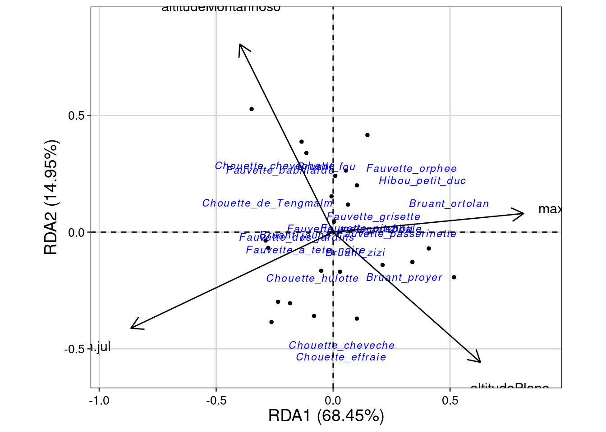
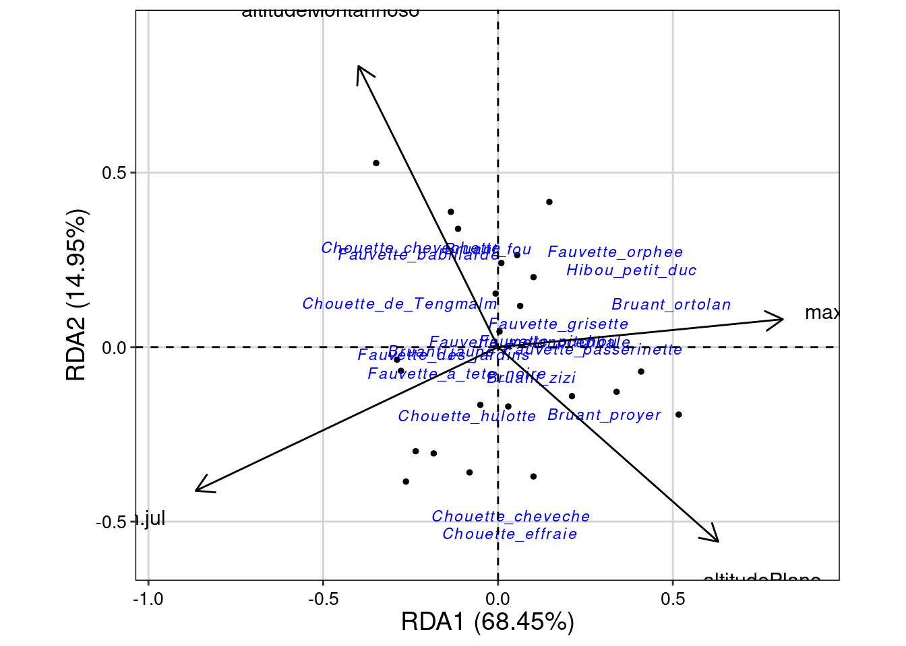
10.7.1.2 Interpretação dos resultados
Os objetos res.axis, res.var e r_quadr mostram, respectivamente, (i) as dimensões (RDA1, RDA2, etc.) que possuem variação na composição de espécies, (ii) as variáveis preditoras que explicam esta variação, e (iii) o valor do R2 ajustado. Neste exemplo, podemos observar que somente a dimensão 1 (RDA1) representa uma variação significativa da composição de espécies (P = 0,001). As variáveis rain.jul, maxi.jul e altitude foram todas preditoras importantes da composição de espécies, mas rain.jul se destacada com maior valor de F. Além disso, o valor do R2 ajustado de 0.381 indica forte contribuição dessas variáveis preditoras. Porém, uma das limitações desta análise é não considerar que tanto espécies quanto variáveis preditoras podem estar estruturadas espacialmente. Como resultado, os resíduos da análises podem apresentar autocorrelação espacial que, por sua vez, aumenta o erro do tipo I (numerica2012?). A figura obtida com o comando msoplot(bird.rda) demonstra que existe autocorrelação espacial em algumas distâncias da análise. Veja abaixo algumas alternativas para resíduos com autocorrelação espacial.
10.7.2 RDAp: Análise de Redundância parcial
Um dos problemas da abordagem anterior é que tanto a composição de espécies como as variáveis ambientais estão estruturadas espacialmente. Talvez mais importantes, para que os valores de probabilidade da RDA sejam interpretados corretamente (e para evitar erro do tipo I), os resíduos do modelo não devem estar correlacionados espacialmente, como demonstrado com a análise MSO. Uma alternativa é de incluir a matriz de dados espaciais (matrix W) como valor condicional dentro da RDA. Esta análise é conhecida como RDA parcial.
Porém, a obtenção dos dados espaciais da matriz W é mais complexo do que simplesmente incluir dados de localização geográfica (latitude e longitude), como feito em alguns modelos lineares (e.g., gls, Capítulo 8). Existem diversas ferramentas que descrevem e incorporam o componente espacial em métodos mulitidimensionais, mas os Mapas de autovetores de Moran (MEM) são certamente os mais utilizados (Dray et al., 2012). A análise MEM consiste na ordenação (PCoA) de uma matriz truncada obtida através da localização geográfica das localidades utilizando distância euclidiana, matriz de conectividade e matriz espacial ponderada. Os autovalores obtidos no MEM são idênticos aos coeficientes de correlação espacial de Moran I. Um procedimento chave desta análise é a definição de um limiar de trucamento (do inglês truncate threshold). Este limiar é calculado a partir de uma “árvore de espaço mínimo” (MST, do inglês minimum spanning tree) que conecta todos os pontos de coleta. Na prática, os valores menores do que o limiar definido pela MST indicam que os pontos com aqueles valores estão conectados e, assim possuem correlação positiva. Outro ponto importante desta análise é a obtenção da matriz espacial ponderada (SWM, do inglês spatial weighthing matrix). A seleção da matriz SWM é parte essencial do cálculo dos MEM e não deve ser feita arbitratiamente (Bauman, Drouet, Fortin, et al., 2018). Por este motivo a análise recebe este nome (Legendre & Legendre, 2012). Finalmente, o método produz autovetores que representam preditores espaciais que podem ser utilizados na RDA parcial (e outras análises). É importante ressaltar que o critério de seleção do número de autovetores é bastante debatido na literatura e, para isso, sugerimos a leitura dos seguintes artigos Bauman, Drouet, Dray, et al. (2018).
Então, o primeiro passo para realizar uma RDA parcial é de gerar os autovetores espaciais (MEMs).
## Dados matriz padronizada de composição de espécies.
head(species.hel)[, 1:6]
#> Fauvette_orphee Fauvette_des_jardins Fauvette_a_tete_noire Fauvette_babillarde Fauvette_grisette
#> S01 0 0.3651484 0.3651484 0.2581989 0.2581989
#> S02 0 0.3333333 0.3333333 0.2357023 0.2357023
#> S03 0 0.3162278 0.3162278 0.3162278 0.2236068
#> S04 0 0.4200840 0.3429972 0.2425356 0.0000000
#> S05 0 0.3872983 0.3162278 0.2236068 0.3162278
#> S06 0 0.3779645 0.3779645 0.2672612 0.0000000
#> Fauvette_pitchou
#> S01 0
#> S02 0
#> S03 0
#> S04 0
#> S05 0
#> S06 0
# latitude e longitude.
head(xy)
#> x y
#> S01 156 252
#> S02 141 217
#> S03 171 233
#> S04 178 215
#> S05 123 189
#> S06 154 195
# dados ambientais padronizados e altitude
head(env.pad.cat)
#> rain.jul maxi.jul altitude
#> S01 1.333646 0.1462557 Montanhoso
#> S02 1.468827 -0.6848206 Intermediário
#> S03 1.505694 -0.2099199 Montanhoso
#> S04 1.296778 -2.0699476 Montanhoso
#> S05 1.075572 -0.3682201 Plano
#> S06 1.100151 -0.6056705 Intermediário
# Passo 1: Gerar um arquivo LIST W: list binária de vizinhança
mat_knn <- knearneigh(as.matrix(xy), k = 2, longlat = FALSE)
mat_nb <- knn2nb(mat_knn, sym = TRUE)
mat_listw <- nb2listw(mat_nb, style = "W")
mat_listw
#> Characteristics of weights list object:
#> Neighbour list object:
#> Number of regions: 23
#> Number of nonzero links: 58
#> Percentage nonzero weights: 10.96408
#> Average number of links: 2.521739
#>
#> Weights style: W
#> Weights constants summary:
#> n nn S0 S1 S2
#> W 23 529 23 18.84444 96.01111
# Passo 2: Listar os métodos 'candidatos' para obter a matriz SWM
MEM_mat <- scores.listw(mat_listw, MEM.autocor = "positive")
candidates <- listw.candidates(xy, nb = c("gab", "mst", "dnear"), weights = c("binary",
"flin"))
# Passo 3: Selecionar a melhor matriz SWM e executar o MEM
W_sel_mat <- listw.select(species.hel, candidates, MEM.autocor = "positive", p.adjust = TRUE,
method = "FWD")
#> Procedure stopped (alpha criteria): pvalue for variable 5 is 0.088000 (> 0.050000)
#> Procedure stopped (alpha criteria): pvalue for variable 3 is 0.064000 (> 0.050000)
#> Procedure stopped (alpha criteria): pvalue for variable 3 is 0.061000 (> 0.050000)
#> Procedure stopped (alpha criteria): pvalue for variable 4 is 0.159000 (> 0.050000)
# Passo 4: Matriz dos preditores espaciais escolhidos (MEMs)
spatial.pred <- as.data.frame(W_sel_mat$best$MEM.select)
# necessário atribuir os nomes das linhas
rownames(spatial.pred) <- rownames(xy)Depois de gerar os valores dos autovetores espaciais (MEM), é possível executar a a RDA parcial utilizando esses valores no argumento ‘Conditional.’
## Combinar variáveis ambientais e espaciais em um único data.frame
pred.vars <- data.frame(env.pad.cat, spatial.pred)
## RDA parcial
rda.p <- rda(species.hel ~
rain.jul + maxi.jul + altitude + # Preditores ambientais
Condition(MEM1+MEM2+MEM4+MEM5), # Preditores espaciais
data = pred.vars)
# Para interpretar, é necessário saber a significância dos eixos para representar a relação entre as variáveis preditoras e a composição de espécies
res.p.axis <- anova.cca(rda.p, by="axis")
res.p.axis
#> Permutation test for rda under reduced model
#> Forward tests for axes
#> Permutation: free
#> Number of permutations: 999
#>
#> Model: rda(formula = species.hel ~ rain.jul + maxi.jul + altitude + Condition(MEM1 + MEM2 + MEM4 + MEM5), data = pred.vars)
#> Df Variance F Pr(>F)
#> RDA1 1 0.008471 2.1376 0.312
#> RDA2 1 0.004830 1.2189 0.782
#> RDA3 1 0.003240 0.8176 0.892
#> RDA4 1 0.001891 0.4773 0.902
#> Residual 14 0.055477
# Em seguida, é possível identificar quais são as variáveis que contribuem ou que mais contribuem para a variação na composição de espécies
res.p.var <- anova.cca(rda.p, by="term") ## Qual variável?
res.p.var
#> Permutation test for rda under reduced model
#> Terms added sequentially (first to last)
#> Permutation: free
#> Number of permutations: 999
#>
#> Model: rda(formula = species.hel ~ rain.jul + maxi.jul + altitude + Condition(MEM1 + MEM2 + MEM4 + MEM5), data = pred.vars)
#> Df Variance F Pr(>F)
#> rain.jul 1 0.004406 1.1119 0.340
#> maxi.jul 1 0.004446 1.1220 0.337
#> altitude 2 0.009579 1.2087 0.238
#> Residual 14 0.055477
RsquareAdj(rda.p)
#> $r.squared
#> [1] 0.1361661
#>
#> $adj.r.squared
#> [1] 0.02330319Se você comparar os resultados do objeto res.p.var (RDA parcial) com res.var (RDA simples) é possível perceber como a estrutura espacial nos resíduos aumenta a probabilidade de cometer erro do tipo 1. O modelo da RDA parcial mostra que não existem qualquer efeito direto das variáveis ambientais sobre a composição de espécies (conclusão com a RDA simples). Na verdade, tanto a composição de espécies quanto as variáveis climáticas estão fortemente estruturadas no espaço, como demonstramos a seguir:
## Padrão espacial na composição de espécies
pca.comp <- dudi.pca(species.hel, scale = FALSE, scannf = FALSE)
moran.comp <- moran.mc(pca.comp$li[, 1], mat_listw, 999)
## Padrão espacial das variáveis ambientais
env$altitude <- as.factor(env$altitude)
ca.env <- dudi.hillsmith(env, scannf = FALSE)
moran.env <- moran.mc(ca.env$li[, 1], mat_listw, 999)
## Estrutura espacial na composição de espécies?
moran.comp
#>
#> Monte-Carlo simulation of Moran I
#>
#> data: pca.comp$li[, 1]
#> weights: mat_listw
#> number of simulations + 1: 1000
#>
#> statistic = 0.62815, observed rank = 1000, p-value = 0.001
#> alternative hypothesis: greater
## Estrutura espacial na variação ambiental?
moran.env
#>
#> Monte-Carlo simulation of Moran I
#>
#> data: ca.env$li[, 1]
#> weights: mat_listw
#> number of simulations + 1: 1000
#>
#> statistic = 0.72714, observed rank = 1000, p-value = 0.001
#> alternative hypothesis: greaterComo resultado, é possível que a variação ambiental espacialmente estruturada é o principal efeito sobre a composição de espécies. Uma maneira de visualizar a contribuição relativa de diferentes matrizes (ambiental e espacial, por exemplo) é utilizar o método de partição de variância. O resultado deste modelo indica que, de fato, não existe efeito direto das variáveis ambientais e sim do componente representado pela autocorrelação espacial dessas variáveis.
### Partição de variância
pv.birds <- varpart(species.hel, env.pad.cat, spatial.pred)
plot(pv.birds)
10.8 PERMANOVA
A PERMANOVA é um acrônimo, em inglês, de permutational multivariate analysis of variance, análise proposta por Anderson (M. J. Anderson, 2001). A PERMANOVA é usada para testar hipóteses multivariadas que comparam a abundância de diferentes espécies em resposta a diferentes tratamentos ou gradientes ambientais. Esta análise foi desenvolvida como forma de solucionar algumas limitações da tradicional ANOVA multivariada (MANOVA). Em especial, o pressuposto da MANOVA de distribuição normal multivariada é raramente encontrado em dados ecológicos.
O primeiro passo da PERMANOVA é selecionar uma medida de distância apropriada aos dados e, além disso, verificar a necessidade de padronização ou transformação dos dados. Em seguida, as distâncias são comparadas entre os grupos de interesse (por exemplo, tratamento vs. controle) usando a estatística F de maneira muito parecida com uma ANOVA (Capítulo 8), chamada de pseudo-F:
\[ F = (SSa / SSr)*[(N-g) / (g-1)] \]
onde SSa representa a soma dos quadrados entre grupos, SSr a soma de quadrados dentro do grupo (residual), N o número de unidades amostrais e g os grupos (ou níveis da variável categórica). Esta fórmula do pseudo-F é específica para desenho experimental com um fator. Outros desenhos mais complexos são apresetandos em Anderson [(2001); (2017). O cálculo do valor de probilidade é realizado por métodos de permutação que são discutidos em Anderson & Ter Braak (2003).
10.8.0.1 Exemplo 1
Espécies de aves que ocorrem em localidades com diferentes altitudes.
Pergunta
- O clima e a altitude modificam a composição de espécies de aves?
Predições
- Diferenças climáticas (temperatura e chuva) e altitudinais alteram a composição de espécies de aves.
Variáveis
Preditoras: Temperatura e chuva (contínuas) e altitude (categórica com três níveis)
Dependente: composição de espécies de aves
# Composição de espécies padronizar com método de Hellinger
species.hel <- decostand(species, "hellinger")
# Matriz de distância com método Bray Curtis
sps.dis <- vegdist(species.hel, "bray")Para reduzir o número de variáveis no modelo, você pode considerar duas abordangens. A primeira, e mais importante delas, é manter somente variáveis preditoras que você tenha razão biológica para mantê-la e, além disso, que esteja relacionada com suas hipóteses. Assim, uma vez que você já removeu variáveis que não tem relevância biológica, você deve usar diferentes métodos para remover as variáveis muito correlacionadas (forward selection, Variance Inflation Factor (VIF), entre outros). Neste exemplo, vamos simplesmente fazer uma correlação múltipla e remover as variáveis com correlação maior do que 0.9 ou -0.9. A função ggpairs mostra um gráfico bem didático para representa a relação entre todas as variáveis e o valor (r) desta correlação.
## Verifica correlação entre as variáveis
ggpairs(env)
# Após verificar a estrutura de correlação, vamos manter somente três
# #variáveis
env2 <- env[, c("mini.jan", "rain.tot", "altitude")]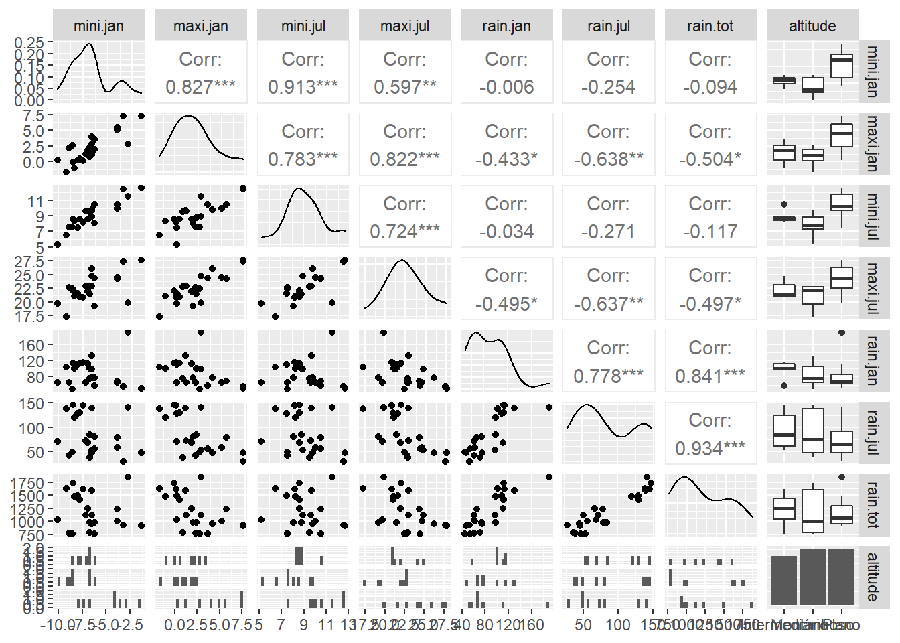
Após selecionar as variáveis do modelo, vamos executar a PERMANOVA e entender as principais etapas para interpretar corretamente o teste. A função adonis do pacote vegan é a melhor opção no vegan. Porém, é importante referir o programa PRIMER e PERMANOVA+ como ótima opção para implementar a PERMANOVA e ter maior controle em desenhos complexos (M. J. Anderson et al., 2008). Assim como nos modelos lineares apresentados no Capítulo 8, os argumento seguem o mesmo formato, com variável dependente separada por um “~” das variáveis preditoras. Porém, alguns autores demonstraram que a PERMANOVA (assim como Mantel e ANOSIM) não pode identificar se diferenças significativas do teste (usando a estatística pseudo-F) se devem a diferenças no posição, na dispersão ou ambos. Ou seja, ao comparar grupos não é possível identificar se existe mudanças de composição (posição) ou a variação da composição de espécies dentro de um grupo (dispersão) é maior do que a variação dentro do outro grupo (M. J. Anderson & Walsh, 2013). Para solucionar este problema, é possível combinar a PERMANOVA com a análise PERMDISP (ou BETADISPER, como chamado no pacote vegan). Esta análise permite comparar se existe heterogeneidade nas variâncias entre grupos. Deste modo, a presença de heterogeneidade de variâncias (valor do BETADISPER significativo), é possível saber que as diferenças entre os grupos ocorre principalmente por diferenças na dispersão e não, necessariamente, de posição. Mais detalhes sobre a relevância de combinar essas duas análises estão disponíveis em Anderson & Walsh (2013).
perm.aves <- adonis2(sps.dis ~ mini.jan + rain.tot + altitude, data = env2)
perm.aves ### Diferenças entre os tratamentos?
#> Permutation test for adonis under reduced model
#> Terms added sequentially (first to last)
#> Permutation: free
#> Number of permutations: 999
#>
#> adonis2(formula = sps.dis ~ mini.jan + rain.tot + altitude, data = env2)
#> Df SumOfSqs R2 F Pr(>F)
#> mini.jan 1 0.09069 0.15997 6.3307 0.001 ***
#> rain.tot 1 0.12910 0.22771 9.0118 0.001 ***
#> altitude 2 0.08929 0.15749 3.1163 0.021 *
#> Residual 18 0.25787 0.45483
#> Total 22 0.56695 1.00000
#> ---
#> Signif. codes: 0 '***' 0.001 '**' 0.01 '*' 0.05 '.' 0.1 ' ' 1
betad.aves <- betadisper(sps.dis, env2$altitude)
permutest(betad.aves)
#>
#> Permutation test for homogeneity of multivariate dispersions
#> Permutation: free
#> Number of permutations: 999
#>
#> Response: Distances
#> Df Sum Sq Mean Sq F N.Perm Pr(>F)
#> Groups 2 0.0042643 0.0021322 1.4672 999 0.247
#> Residuals 20 0.0290636 0.0014532Em nosso exemplo, temperatura, chuva e altitude afetaram a variação na composição de espécies. Porém, para identificar se as diferenças de composição entre os níveis da variável altitude, é necessário interpretar os resultados da análise BETADISPER. O comando permutest(betad.aves) mostra que o valor de probabilidade da análise foi de 0.253, ou seja, a hipótese nula de que a variância entre grupos é homogênea é aceita. Assim, não existe diferenças na dispersão entre grupo, sugerindo que a diferença encontrada na PERMANOVA (objeto perm.aves) se deve, em parte, a mudança na composição de espécies de aves entre diferentes altitudes (R2 = 0.135). Além disso, a chuva (R2 = 0.183) e temperatura (R2 = 0.127) foram fatores importantes na variação da composição de espécies.
Como falado anteriormente, as análises de ordenação irrestritas (PCA, PCoA, nMDS) são utilizadas para explorar dados. Uma maneira poderosa de usá-las é combinando com análises que testam hipóteses, como PERMANOVA e RDA (abaixo). A literatura ecológica tem usado a análise de escalonamento não métrico (nMDS) combinado com análises multidimensionais de variância (como a PERMANOVA) para visualização da similaridade na composição de espécies dentro e entre grupos. A seguir, implementamos o nMDS na matriz de composição de espécies de ácaros.
# Matriz de distância representando a variação na composição de espécies
# (método Bray-Curtis)
as.matrix(sps.dis)[1:6, 1:6]
#> S01 S02 S03 S04 S05 S06
#> S01 0.0000000 0.15133734 0.16720405 0.2559122 0.2559882 0.2588892
#> S02 0.1513373 0.00000000 0.04114702 0.1190172 0.1289682 0.1391056
#> S03 0.1672040 0.04114702 0.00000000 0.1420233 0.1358127 0.1410867
#> S04 0.2559122 0.11901720 0.14202325 0.0000000 0.1140283 0.1199803
#> S05 0.2559882 0.12896823 0.13581271 0.1140283 0.0000000 0.2129054
#> S06 0.2588892 0.13910558 0.14108668 0.1199803 0.2129054 0.0000000
# É preciso calcular uma primeira 'melhor' solução do nMDS
sol1 <- metaMDS(sps.dis)
#> Run 0 stress 0.1344042
#> Run 1 stress 0.1272417
#> ... New best solution
#> ... Procrustes: rmse 0.0789082 max resid 0.3526074
#> Run 2 stress 0.1344042
#> Run 3 stress 0.1336481
#> Run 4 stress 0.1344042
#> Run 5 stress 0.1336481
#> Run 6 stress 0.1336481
#> Run 7 stress 0.1338432
#> Run 8 stress 0.1338432
#> Run 9 stress 0.1378506
#> Run 10 stress 0.1336481
#> Run 11 stress 0.1338433
#> Run 12 stress 0.1338432
#> Run 13 stress 0.1338432
#> Run 14 stress 0.1336481
#> Run 15 stress 0.1344042
#> Run 16 stress 0.1600808
#> Run 17 stress 0.1272418
#> ... Procrustes: rmse 8.48708e-05 max resid 0.0003246819
#> ... Similar to previous best
#> Run 18 stress 0.1344042
#> Run 19 stress 0.1611279
#> Run 20 stress 0.1336481
#> *** Solution reached
# Depois, executar a mesma função, mas utilizando uma 'melhor solução inicial'
# para evitar resultdos subótimos no nMDS
nmds.beta <- metaMDS(sps.dis, previous.best = sol1)
#> Starting from 2-dimensional configuration
#> Run 0 stress 0.1272417
#> Run 1 stress 0.1272418
#> ... Procrustes: rmse 2.997893e-05 max resid 0.000115054
#> ... Similar to previous best
#> Run 2 stress 0.1378506
#> Run 3 stress 0.1336481
#> Run 4 stress 0.1344042
#> Run 5 stress 0.1344042
#> Run 6 stress 0.1272417
#> ... New best solution
#> ... Procrustes: rmse 3.864488e-06 max resid 1.312654e-05
#> ... Similar to previous best
#> Run 7 stress 0.1600803
#> Run 8 stress 0.1336481
#> Run 9 stress 0.1272417
#> ... Procrustes: rmse 2.636369e-06 max resid 7.540622e-06
#> ... Similar to previous best
#> Run 10 stress 0.1272417
#> ... Procrustes: rmse 2.44969e-05 max resid 9.417254e-05
#> ... Similar to previous best
#> Run 11 stress 0.1336481
#> Run 12 stress 0.1272417
#> ... New best solution
#> ... Procrustes: rmse 4.828567e-06 max resid 1.820829e-05
#> ... Similar to previous best
#> Run 13 stress 0.1344042
#> Run 14 stress 0.1272417
#> ... Procrustes: rmse 7.317335e-06 max resid 2.766948e-05
#> ... Similar to previous best
#> Run 15 stress 0.3652494
#> Run 16 stress 0.1659926
#> Run 17 stress 0.1338432
#> Run 18 stress 0.1336481
#> Run 19 stress 0.1344042
#> Run 20 stress 0.1272418
#> ... Procrustes: rmse 2.223437e-05 max resid 8.504391e-05
#> ... Similar to previous best
#> *** Solution reached
# O stress é o valor mais importante para interpretar a qualidade da ordenação
# ()
nmds.beta$stress # valor ideal entre 0 e 0.2
#> [1] 0.1272417
# Exportar os valores para fazer gráfico
dat.graf <- data.frame(vegan::scores(nmds.beta), altitude = env2$altitude)
# Definir os grupos ('HULL') para serem categorizados no gráfico
grp.mon <- dat.graf[dat.graf$altitude == "Montanhoso", ][chull(dat.graf[dat.graf$altitude ==
"Montanhoso", c("NMDS1", "NMDS2")]), ]
grp.int <- dat.graf[dat.graf$altitude == "Intermediário", ][chull(dat.graf[dat.graf$altitude ==
"Intermediário", c("NMDS1", "NMDS2")]), ]
grp.pla <- dat.graf[dat.graf$altitude == "Plano", ][chull(dat.graf[dat.graf$altitude ==
"Plano", c("NMDS1", "NMDS2")]), ]
## Combinar dados dos grupos para cada Convex Hull
hull.data <- rbind(grp.mon, grp.int, grp.pla)
head(hull.data)
#> NMDS1 NMDS2 altitude
#> S04 -0.10578360 -0.10682795 Montanhoso
#> S01 -0.25332377 0.04198598 Montanhoso
#> S11 -0.12504868 0.14477145 Montanhoso
#> S15 0.09166003 0.09857211 Montanhoso
#> S18 0.01968282 -0.12417413 Intermediário
#> S06 -0.16053934 -0.08924307 Intermediário
# Gráfico combinado os escores do nMDS com polígonos dos valores por cada cota
# altitudinal
dat.graf %>%
ggplot(aes(x = NMDS1, y = NMDS2, color = altitude, shape = altitude)) + theme_bw() +
geom_point(size = 4, alpha = 0.7) + geom_polygon(data = hull.data, aes(fill = altitude,
group = altitude), alpha = 0.3) + scale_color_manual(values = c("darkorange",
"darkorchid", "cyan4")) + scale_fill_manual(values = c("darkorange", "darkorchid",
"cyan4")) + xlab("NMDS1") + ylab("NMDS2") + theme(axis.title.x = element_text(size = 14),
axis.text.x = element_text(vjust = 0.5, size = 12), axis.title.y = element_text(size = 14),
axis.text.y = element_text(vjust = 0.5, size = 12), legend.position = "top",
legend.title = element_blank()) + tema_livro()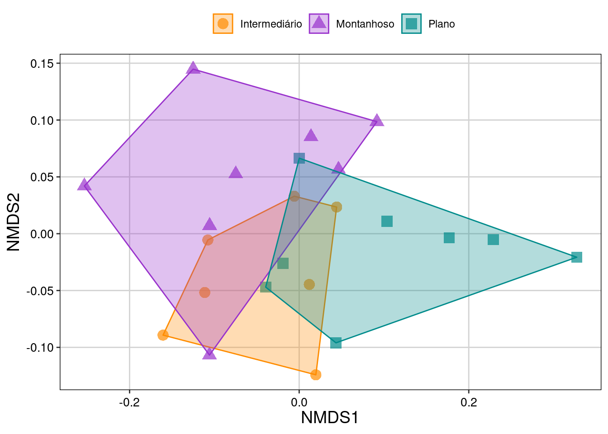